第 20 章状态构造与表示学习
仓库主例沿用第 18、19 章的路线。机器人从 出发， 的指示灯亮左或亮右，以 的概率指向通往 的一侧；走一步到转角 时，灯已经看不见。选对直达 ，到站得 ；选错经 、 绕行，到站得 。要在 选对，机器人必须把 的指示带到 ；要在 报准向左能否到 ，还要知道这份指示有多可靠。
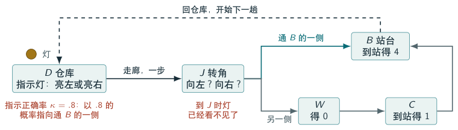
设这份记忆由一个参数 决定：在 写入 （亮左取 ），走到 时乘 ，于是 ；读出 报向左到 的概率。平方风险是 ，其中 在向左走后到 时记 、到 时记 。亮左之后， 时报 ，平方风险 ； 照抄指示，报 ，风险 ； 报 ，与真实条件概率相同，风险 。一般地，记指示的正确率为 ，亮左时 的均值是 、方差是 ；报出 时，平方风险等于方差加上偏差 的平方： 亮右时同理。 时它是 ，最优 。若指示的正确率由 变为 ，同样形状的曲线平移到 ，最低值仍是 ：同样的写入，含义反了过来。设计者写定的 照旧读，跟不上这种变化；学出的 可以改号，所以要让经验去调 。20.4 节在这个仓库上的初步结果是：指示不变时，学 的几种做法与固定记忆的累计回报相差不过三百；学 多得的回报，来自指示反转以后的恢复。
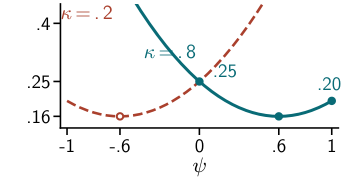
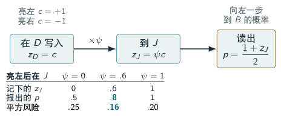
第 18 章给出了判据：一份有限的智能体状态 何时足以代替整段历史。第 19 章给出了要问的问题：通用价值函数规定状态必须支持哪些预测。两章都假定状态递推由设计者写定。本章撤去这一条件，问怎样从经验中学出递推 预测问题规定状态必须保留什么，预测误差指出它还缺什么；控制误差也会经同一递推回到参数 ，但它对状态的要求不同。
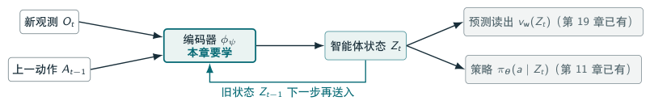
让经验去调 ，有三处困难。第一，误差在 之后才到，要改的却是更早在 的写入。把整段历史存下来再倒着求导，可以算出这份责任；第 17 章的严格流式约束只许单遍处理经验，每步的内存与计算为 ，不许这样做。按本课的整理，第 1 到 12 章的方法都在给定的状态上学价值与策略：表格方法假定状态满足马尔可夫性，函数逼近假定特征已经给好；第 10、11 章的深度网络虽然也学表示，训练时却可以反复重读存下的经验，沿整段历史求导。第 17 章的严格流式把这条路堵住了，所以这一处困难在本章格外难；20.3 节的“敏感度的代价”算出截断丢掉多少、完整求导要花多少。
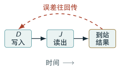
第二，预测和控制对状态的要求不同。预测误差要求在 报出的把握与事实一致，即报 ，把 校准到 。选路的回报只看 与策略参数 的乘积 ： 不变时，指示记得越牢、选路越果断，回报越高，控制信号把 推向 ，在 没有停点； 也在学时， 与 的回报相同，越牢越好这一结论就不成立。两种误差流进同一个 ，越过 后一个要 减小、一个要它增大。让两种误差各改各的参数，就是 20.4 节的办法一。
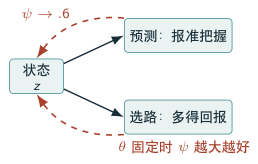
第三，梯度只能调已有的东西。若递推在 不写入，亮左、亮右到 后是同一个 。改哪个已有参数都不能让 处的读数随指示变；梯度分不开这两段历史，误差无从提示学习器该在 记一位。
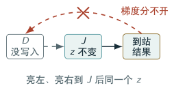
三处困难合起来看，变的是记什么由谁定：第 1–12 章假定环境直接给出马尔可夫状态；第 18 章由设计者写定记什么；本章让误差来定。
本章按这三处困难依次展开。20.1、20.2 节先给状态坐标一个可检验的含义：每个坐标是一项预测，对错可以用后来的观测核对。20.3 节让预测误差沿递推回到 ，所需的只是随状态一起前推的敏感度 ，不存历史；仓库上一次样本把 由 推到 ，期望更新停在 。20.4 节加入控制误差：它只约束乘积 ，在 处与预测梯度的点积为 ；指示反转后，能改 的学习器用 到 步恢复，固定 的学习器在 步内只回到每步约 。20.5 节处理梯度到不了的情形：提出候选记忆 ，在留出的行程上检验，把 处的平方风险由 经 降到 。20.6 节问学到的表示何时够用：两段历史并成一个状态时，凡要用到的读出都得答得一样；换一种多步走法，所需的读出也跟着变。
给定动作—观测流与要回答的预测问题，学出状态递推 。
状态由智能体构造 环境只给观测； 是学习器每步按递推自己算出的量，记什么由误差来定。第 1–12 章把这一步交给环境，第 18、19 章交给设计者，本章交给误差。编码器 是本章要学的部分；其上的预测读出 用第 19 章的 GVF，策略 用第 11 章的策略梯度，都是已有的部件。
已知 动作—观测流，奖励当作观测的一个分量，与第 18 章同样处理；GVF 问题 ，即按哪个策略走、累积什么信号、何时截止，仓库上 为向左， 为到 记 ， 为到站即 ，所以回报 就是向左后到不到 的那个 或 ； 的参数族，例如仓库上的写入后乘 。在 20.1 节另知有限 POMDP 的模型。
未知 环境的隐藏状态与转移；参数 ，也就是递推应当写入、保持哪些历史区别。
目标 预测： 仓库上它就是平方风险，照抄指示（）时为 ，学到 时降为 。控制：整个 lifetime 的累计回报 ，它把 自己的学习过程也算进去，学得慢、学错方向都会少拿回报； 要在指示不变与反转后各量一次。
与 MDP 的关系 分两层。其一，若学到的 对所需的读出充分（第 18 章的定义），这些读出可以在 上学。要把第 1–12 章的控制方法原样用在 上，把 当状态做 TD、做策略梯度，还要 对控制充分：每个动作下的奖励均值与下一个 的分布只依赖 。其二， 在学的时候，同一段历史映到的 随 变化， 上的转移概率也随之变化；对学习器来说这个过程既不平稳，也不一定满足马尔可夫性，不是一个固定的 MDP，第 5、9 章 TD 的收敛条件不能直接套用。这一层是本章与第 1–12 章的主要区别。20.5 节末尾再回到这一点：读出取遍全部测试时，充分性就是 PSR 的马尔可夫性。
撤去的条件 ④：状态递推由设计者写定。编号由第 15 章默认条件表的第四项细分而来：第 18、19 章虽不再假定状态充分，却仍默认状态怎样递推由设计者写好。
预算 的维数与候选槽数固定；误差只沿递推敏感度 回传，不存历史，也不沿时间展开重算。
怎样判定做成了 预测是否校准（主算例的平方风险由 降到 ）；控制看 （20.4 节）；一份候选记忆要在未参与选定的新行程上检验（20.5 节的两阶段流程）。
本章的主线 前五节用不同的信号逼近同一个目标，即上面的预测目标；20.6 节判定学到的表示是否够用。对 求半梯度（自举目标当常数），改量是三项的乘积： 第一项是误差 ：目标里的回报要等很久，20.2 节用下一步的预测当目标，这就是 TD 网络的自举。第二项是读出对状态的梯度：读出只关心状态的哪几维，误差就只往那几维送。第三项是敏感度 ，即状态对 的导数，按右边的递推往前带，把误差送回多步以前写入记忆的那一步，这是 20.3 节。20.4 节在同一个 上再加控制的梯度，回报差乘同一个敏感度；两路梯度方向相反时互相干扰。20.5 节处理梯度到不了的地方：递推里没有的那一位，两段历史在 并成一个状态，梯度分不开，只能先提出候选、再在新行程上检验。20.6 节给出判据：两段历史并成一个状态，凡要用到的读出就得答得一样；换一种多步走法，要保留的区别也跟着变。下表按结构由谁定、靠什么信号训练、还缺什么三方面排六节（本课的整理）。
| 节 | 结构由谁定 | 训练信号 | 留下的困难 |
|---|---|---|---|
| 20.1 PSR | 设计者选测试 | 由模型算出 | 要模型 |
| 20.2 TD 网络 | 设计者给问题 | TD 自举 | 误差不跨时刻 |
| 20.3 敏感度 | 设计者给 | 的规模 | |
| 20.4 控制 | 同上 | 再加策略梯度 | 两路梯度干扰 |
| 20.5 候选记忆 | 学习器提候选 | 新行程上检验 | 检验耗经验 |
| 20.6 充分性 | 所需读出 | 只判定 | 随走法变 |
20.5 节不再求梯度，在后来的数据上检验结构；20.6 节给出够用的判据。章末回到主线一段对照各节对这条式子的回答。
不同意见 有人认为状态只该由控制误差端到端学出，预测问题是多余的约束；也有人认为回报太稀，校准的预测是更容易检验的标准。本章两种误差都用，20.4 节用两种梯度的点积量出它们冲突的程度。
下图把六节串成一条链，每节处理上一节留下的困难。
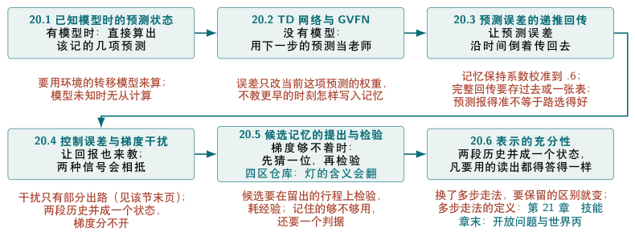
下表按“方法—解决的困难—留下的困难”排列本章各节，留下的困难由下一行处理。
| 节 | 方法 | 解决的困难 | 留下的困难 |
|---|---|---|---|
| 20.1 | 线性 PSR：核心测试的成功概率作坐标（算法 20.1） | 模型已知时，状态无须命名隐藏状态，所有预测都是 的线性函数 | 搜索核心测试要用模型 |
| 20.2 | TD 网络与 GVF 网络（算法 20.2） | 无模型时，用下一步的观测或预测训练各坐标 | 误差只改节点自己的权重，不教递推更早时怎样写入 |
| 20.3 | 敏感度 与共享 GVF 更新（算法 20.3） | 预测误差沿递推回到 ；仓库上 收敛到 | 控制关心的区别可能与预测不同 |
| 20.4 | 策略梯度经 回传；梯度干扰 | 控制误差也能训练 ；点积度量两种误差的冲突 | 控制只约束 ；递推中没有的分量梯度到不了 |
| 20.5 | 候选记忆的生成与检验 | 提出新分量并在新行程上检验 | 检验耗经验；记住的够不够用，还缺判据 |
| 20.6 | 充分性判据 | 按读出与执行的行为判定状态是否够用 | 决策仍是一步一个（第 21 章） |
20.1 已知模型时的预测状态课件
第 18 章的信念滤波器保存智能体处在哪个隐藏状态的概率。Littman、Sutton 与 Singh 给出了另一种精确坐标：保存若干项可执行测试的成功概率。测试 同时指定动作序列与要观察到的结果。它问的是按此顺序行动时看到这些结果的概率，所以测试不包含行为策略碰巧采取这些动作的概率。测试只列出要执行的动作，并不规定其他情形下怎样行动。这里先给出已知有限 POMDP 时的构造。测试记作无衬线的 ，以免与 GVF 问题 混淆。隐藏状态记为 ，粗体 为本节的局部向量与矩阵。
测试 在历史 之后的预测写成 条件中的动作是干预：假设一定这样走，会看到什么。仓库上取两项最短的测试，在 向左一步是否见 、向右一步是否见 。指示以 的概率正确，两段历史的预测如下。
| 到达 之前的历史 | ||
|---|---|---|
| 亮左，再到 | ||
| 亮右，再到 |
把这两项预测排成 。在 处，隐藏的只剩哪一侧通 ， 就是一份状态，此后关于观测的任何问题都可由它算出（下面的算法说明理由）。第 18 章写入的是指示为左这一事实，环境无法告诉智能体记得对不对；这里的坐标是对未来的预报，有可验证的语义：机器人每次真的向左走一步，就得到一个标签，可以用实际到站的结果逐趟核对。
算法 20.1 线性 PSR。 找出核心测试，再按条件概率递推它们的预测；模型已知时不需要学习。
- 为每个测试列出结果向量。 令 。列向量 的第 个分量是从隐藏状态 出发通过测试 的概率。空测试总成功，；在 前加一次动作与观测 ，新列为 。
- 搜索能增加秩的测试。 从空测试开始，令矩阵 起初无列。对当前测试的每一个前缀 ，若 不在 的列空间中，就将该列加入 ，递归搜索这个新测试的所有一步扩展，然后继续检查其余前缀。每次添加都会增秩，故最多保留 项。将保留的测试记为 。
- 初始化。 ， 是初始信念；仓库上看灯前 。这一步要用搜出的 ，所以排在搜索之后。
- 以联合概率更新条件概率。 搜索结束后，每个一步测试 以及每个 （两类统记为 ）都有系数 满足 ，可从模型预先求解。从第 3 步的 开始，每来一对 ，若 ，各分量都用更新前的同一个 计算 ，然后用 替换 。
分母相同的原因。 分子是现在见到 、随后又通过 的联合概率，分母是执行 时见到 的概率。仓库上见亮左的概率是 ，亮左且左侧通 的概率是 ，故 。核心测试至多 项。不能把 项坐标除以它们的总和来归一化，因为不同测试可以同时成功。只有当前反馈在模型中有正概率才可这样更新。若控制需要预测奖励，应一并在反馈符号中编码奖励。原文用已知动力学和准确秩判定给出构造；若只有一条有限轨迹，罕见测试的概率及候选列的秩还需估计。Littman、Sutton 与 Singh，Predictive Representations of State，NeurIPS 2001，§§1–2、式 (3) 与 search
仓库上的坐标。 有噪指示下，到 时隐藏的只是哪一侧通往 。若在 见到亮左，信念为 。取两项一步测试向左一步见 与向右一步见 ，它们的结果列分别是 与 ，于是 ：测试坐标在这里恰好等于信念。
这两个数也可以由算法第 4 步算出：从信念 出发，在 见到亮左，联合概率亮左且左边通 为 ，亮左的概率为 ，于是 ；同理 。第三项测试向左一步见 的结果列也是 ，与第二项相同，搜索不会收它；它的概率由坐标线性读出，为 。
还要分清两件事。一件是自由的数与线性秩：在 处两项预测之和为一，自由的数只有一个；线性秩却是二，因为别的测试要由这两列线性组合出来。另一件是有限数据下能否分辨两列。设两行为 与 ，行列式是 。每行各试 次，两行之差的标准误约 ；各试 次约 。 小于这个量级时，经验数据分不出第二个方向。秩由模型定，可辨性还取决于样本量。
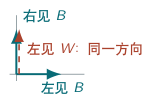
这组坐标是状态的理由。 记 为历史 之后的信念，排成列向量，。
命题. 搜索结束后，对任意测试 ，有 使 ；算法第 4 步给出 。
引理（闭包）. 每个 都在 内，即都能由核心测试的那几列加权拼出。证：搜索对每个保留测试和空测试都试过全部前缀，所以 与 都在 内；又 。由 对长度 归纳：若 ，则 是各 的线性组合，仍在列空间内。
证明. ①用到 POMDP 的条件：给定当前隐藏状态，此后的观测与过去的历史无关，所以从 出发通过测试的概率不必再看 。②说明所有测试的预测都是 的线性函数；③说明下一时刻的 只需旧 与新的 。两条合起来， 满足第 18 章对状态的两项要求：足以回答预测，并能自行递推。因此在一切只依赖未来观测概率的计算中， 可替代信念状态，维数不超过 ，且无须知道隐藏状态的名称。
20.2 TD 网络与 GVFN课件
没有可供计算 的模型，20.1 节的测试概率就算不出来，只能从经验里学。Sutton 与 Tanner 把两件事分开：问题网络规定每一项预测应与哪一项观测或下一刻的预测相符，回答网络把旧预测、动作和新观测变成新预测。仍在仓库上，取原文动作条件问题树的一条分支，指定两项预测，各由一个节点给出：节点 1 在 问向左一步见 吗，记 ；节点 2 在 问走到 再向左一步见 吗，记 。观测 表示见到 ，到 记 ；在 要有机会向左，节点 1 才有标签。这条分支与原文同构：原文是一盏传感灯、先左后右两步，这里是到站结果、先走后左两步。
节点 1 走一步就有标签，节点 2 要两步后才见分晓。从 走到 以后，节点 2 的问题只剩后半段，就是节点 1 在新时刻回答的问题，所以节点 2 不必等第二步，直接拿节点 1 在 的新预测（本次更新前算出）当目标。这是第 5 章 TD(0) 的自举，预测的对象从回报换成了另一项预测。用预测训练预测时，目标链的末端仍是真实的到站结果：节点 1 的目标就是实际观测，事实校正它，节点 2 也跟着得到校正；目标长时间接不到真实观测时，一步 TD 网络会卡住，下文的循环世界就是这样的例子。两个节点的输出 合起来就是智能体状态，这是预测即状态在无模型时的版本。取指示正确率 ，亮左时 在 的真值是 ；到 以后指示已看不见，节点 1 也应报 ，只能靠上一步节点 2 留下的预测。
算法 20.2 Sutton–Tanner 一步 TD 网络的两节点特例。 每个节点只向下一步的观测或另一节点的预测靠拢，误差只改它自己的权重。
- 初始化。 取小随机数，， 用起始动作记号造出；步长 。对 执行第 1–4 步。
- 形成当前状态。 各节点输出 ， 为 logistic 函数。
- 用旧权重制备目标。 执行 ，见 ；把 的指示特征（该动作与观测组合出现时取 、否则取 的输入分量）与 拼成 ，用旧权重算 。
- 按实际动作选目标，只训练条件满足的节点。 在 向左时取 、；在 走一步时取 、。固定目标 与当前输入，写 ，因子 是 logistic 函数的导数。
- 用新权重递推。 用更新后的两组权重从同一个 算两项 ，作为下一次行动前的状态。
一步数例：节点 2 在 报 ；到 后，节点 1 用旧权重报 。此时还没向左，节点 2 已有 的误差信号。它学得多准，取决于到站结果能否校正节点 1。求导时保持目标和本次输入不动，作本地半梯度更新，不沿回答网络的整段历史反向传播。问题和动作条件由设计者给定；即使两个节点的预测损失都很小，也不能由此说明这两项预测足以支持控制。
留下的困难在于误差只修改出错节点自己的权重，不沿时间往回传。在这个例子里，节点 2 会学着依赖 处的指示，原因是它自己的问题需要指示；节点 1 在 的误差并不告诉 处该记什么。若所问的问题都用不着指示，例如只问最终会到站吗，两处真值都是 ，就没有任何误差教 处写下指示。20.3 节让误差沿递推传回 。Sutton 与 Tanner，Temporal-Difference Networks，NeurIPS 2004，图 1(b)、式 (1)–(8)
原型：循环世界课件
Tanner 与 Sutton 用一个最小的环境检验 TD 网络能否学出预测状态。循环世界是六个格子连成的环，没有动作，每步顺时针走一格；只有一个格子的观测位为 ，其余为 。五个零格看起来相同，要知道下一步会不会见到 ，必须记住距上次见 已走了几步。
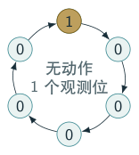
问题网络是一条链： 预报下一步的观测， 预报 在下一步的值，于是 的含义是 步后的观测。五项预测合起来恰好区分六个格子。原文比较了自举的程度： 越接近 ，各节点的目标越多地用实际观测，越少依赖其他节点的预测； 时只用下一节点的下一步预测，即一步 TD 网络。
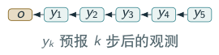
结果。 下表是均方根误差首次低于 所需的步数，原文取自图 5，重跑是本课的程序。
| 原文 | 本课重跑 | |
|---|---|---|
| 不到 | ||
| 约 | ||
| 约 | ||
| 约 | 万步内未达，停在约 | |
| 学不会 | 万步内未达，约 |
原文还在环形世界上做了同样的比较：五格环上 的网络不到 万步，一步 TD 网络要 万步以上；八格环上一步 TD 网络 万步仍学不会。原文表 1 与用期望最大化（EM）学 PSR 的做法比较：六格环上 EM 用 万步误差为 ，TD(1) 网络 步到 ；五格环上是 对 ；八格环上 EM 用 万步为 ，TD(1) 网络 万步到 。本课重跑取初始权重 ，四个步长中取最好，误差按 步平均；世界是确定性的，只跑一次。重跑比原文慢，各 的排序一致。差别的一个来源是导数因子的读法：上表按原文式 (7) 读；按伪代码字面读， 要 步， 要 步，与原文差得更远，次序也不全对。此外，上一步预测的初值、初始状态、误差怎样平均，原文没有写全，本课各取了一个自然的选择。这些细节都可能改变步数，但没有一种改变 TD(0) 卡住这一点。Tanner 与 Sutton，TD(λ) Networks，ICML 2005，pp. 888–895，图 5、表 1
这项证据改变的认识。 一串只问 步后见到什么的预测，本身就能当状态用，不需要隐藏状态的名字；但纯一步自举学得很慢，甚至学不会，目标里要含一部分实际观测（）。
局限。 六个格子、确定性、没有动作，问题网络由设计者给定。它说明 TD 网络能学出预测状态，没有说明在大世界里该问哪些问题。
不同意见 有人认为与 EM 的比较不公平：EM 是批量方法，按样本数比较对它不利。也有人指出一步 TD 网络学不会，是因为输入只有当前观测和上一步预测；若输入含最近五步的观测，它也能学会，只是那时记忆靠的是观测窗口，预测坐标就不再必要。
证据：GVF 网络把问题写进状态
状态可以由一组 GVF 预测构成，问什么决定状态保留什么区别。若给状态坐标本身规定预测语义，就能直接检查它漏掉了哪段来路。Compass World 的机器人在房间中央处处只见白色，贴墙才见墙色。考虑此刻都只见白色、朝向不同的两段历史：刚才看到的墙色和随后执行的转向分别确定了机器人朝向红墙和黄墙。指定行为为一直前进，首次见到任一墙色时停止，仅在此时见红累计 。两段历史上的正确概率分别为 和 。只接收当前白色观测的预测头必然给出同一个数。递推的通用价值函数网络（GVFN）令状态分量 各估计一项 GVF，目标是 ，记号同第 19 章；一个问题的答案又作为下一步递推的输入。同样的辅助问题若只放在普通循环网络的输出头上，只能通过误差间接影响表示。
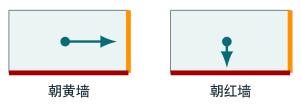
问题的选择决定保留哪种区别。问直行首先见红墙吗，两种朝向的真值为 与 ；改问直行最终会见到墙吗，两处都是 ，若状态只保留这个数，任何读出都无法再区分两种朝向，墙色在定义上就丢了。仓库上同样：问向左一步见 吗，两种指示下真值为 与 ，状态必须记住指示；问最终会到站吗，两处都是 ，没有误差要求记住指示。原研究第 10 节用五种墙色直行首先见到它的概率作评价目标，另设一组终止与折扣不同的 GVF 产生隐状态，再从中读出评价目标；第 11 节比较了问题集的选择和反向传播截断长度（梯度只沿最近几步往回算，见 20.3 节）。问题集合适时，截断短至一步仍能学好；故意选用尺度失衡或难学的问题时，预测变差。原文以曲线报告，没有可直接引用的误差数值，本章只报定性结论。这项证据改变的认识是：状态分量的语义由问题给定，问题选得好，训练所需的时间回溯可以很短。Schlegel 等，General Value Function Networks，§§4、10–11、图 6–7 · 预印本
即使墙色概率学得准确，两条都朝红墙的路线还可能分别要走一步和三步。若控制器要比较所需时间，可以另问一个在未见墙时以 延续、首次见墙时停止的红墙预测。在这两条确定性路线上，答案分别为 和 。改变问题就能让表示保留另一种区别。至于这两列坐标是否值得长久占用记忆，还要看路上能否反复学到答案，以及使用它们的决策能否获得更高主奖励。
诊断一个 GVF 网络时，先在已知的小地图上算出候选问题的真值，看真值能否区分两种朝向；真值可分而学习值分不开，再去查覆盖、截断和更新。这些区别能否换成控制收益，还要看不同朝向是否需要不同动作。
三种做法连成一条线。 PSR（20.1 节）、TD 网络（本节前半）与 GVF 网络都把对未来问题的预测当状态，差别在两处。问题怎样指定：PSR 用测试，TD 网络用问题网络，GVF 网络用 GVF 的三项规定。怎样训练：PSR 在模型已知时直接算；TD 网络用 TD 自举，误差只改本节点；GVF 网络在自举之外，还把误差沿递推截断回传若干步，这一步与 20.3 节相接。从可扩展性看，GVFN 是 PSR 的思路走向函数逼近和大环境的一步，代价落在谁来选问题上：截断一步仍能学好，前提是问题集选得合适。第 19 章讲问题从哪里来，本章的开放问题再回到这一点。Compass World 最早出现在 Sutton、Rafols 与 Koop 讲 TD 网络时间抽象的论文里（NIPS 2005，第 18 章的罗盘世界原型即用此环境），GVFN 一文沿用了它。
20.3 预测误差的递推回传课件
上一站的信息是否值得带到后面，没有人预先告诉机器人。本节说明，后来到达的反馈可以回头训练状态递推。
从这里起，设计者只规定递推的形式，记忆的内容由误差决定。仓库上有两种误差：预测头问向左是否到 ，标签 每趟到站后都有；选路的策略得到回报，选对 、绕行 ，与预期之差 是控制信号。两者都沿状态回到在 写入的参数： 处发现的报错，要沿递推一步一步传回 处写入的那一步。上一节 TD 网络的误差停在节点自己的权重上，本节把它一直传回写入指示的参数。让辅助预测与控制共用一个编码器、借预测帮助训练表示的做法，可参看 Jaderberg 等，Reinforcement Learning with Unsupervised Auxiliary Tasks，ICLR 2017。
标签不会回到过去改变当次决策，训练只改变以后怎样写、怎样读。数据从哪来也有讲究：若只用固定向左的行为采样，就只能观察左动作的标签；要训练能选左右的策略，需要它实际采样的轨迹，或有动作覆盖且可以校正的数据（下文“覆盖”一段）。
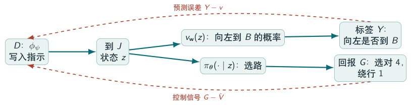
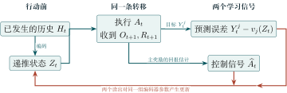
敏感度。 在固定起点、用同一 沿一段实际历史展开 。记敏感度 （字母上的点表示对 求导，不是对时间），读出 ，损失 。 ①中第一项沿旧状态把敏感度带到下一步，第二项是本步直接使用 的贡献。 把当前误差传到历史中每一次使用 的地方，读出梯度则指定误差能改动哪些记忆方向。若改为只沿最近 步往回求导（截断的反向传播），更早的依赖就截掉了。每步在线修改 时，当前保存的状态还含有旧参数的作用，用当前参数重算同一段历史与直接沿用这个状态会给出不同结果。
仓库上的敏感度。 仓库上 与 都是一个数。 在 写入指示 （亮左取 ），其余时刻 ，所以 是记忆保持系数；由①得 ，每走一格，敏感度先乘 、再加上旧状态。 处写入不经过 ，敏感度为零： 若 与 之间多一格走廊，从 到中间一格，，敏感度从 变成 ；到 时 ，敏感度变成 。走廊每长一格，同一参数多用一次， 就多累积一份；误差能教会先前怎样记，靠的就是这几份贡献。截断会丢掉哪一份、完整算要花多少，是下一小节的内容。
敏感度的代价课件
仓库上的 只是一个数，前推一步只多一次乘加：。一般情形下这份代价会变大，常见的省法是截断。先看截断丢了什么。在 与 之间加一格走廊 ，则 ，。取 、、：，，，。完整的敏感度是 ，梯度 ；只展开最后一步，截去 ，得 ，梯度 ，只剩一半。完整梯度可以先用有限差分核对： 从 加 ， 从 变到约 ，损失的变化除以 约为 ，与完整的梯度一致。两种算法报出的 相同，截去的就是走廊那一次使用 的贡献。丢多少看截断长度：状态乘 次 时，完整敏感度是 ，只回传 步时是 ，留下 ；这里 、，恰好一半，走廊越长，留下的份额越小。
完整的 与 在这个数例里数值相同，只因 ；两者是不同的量， 换一个值就不再相等。
下表比较几种求敏感度的办法。
| 办法 | 要存什么 | 每步代价 | 丢掉什么 |
|---|---|---|---|
| 沿时间反向传播（BPTT） | 整段历史 | 随一趟的长度增长 | 不丢，但要重读过去 |
| 截断 BPTT（ 步） | 最近 步 | 随 增长 | 更早的用处 |
| 实时递推学习（RTRL） | 个数 | 不丢；在线更新时是近似 | |
| 循环迹单元（RTU） | 每个单元的 | 逐单元前推 | 非线性时单元之间的任意连接 |
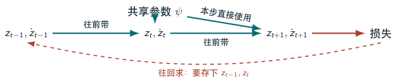
拿到完整导数有两种做法。往回求是到站以后沿存下的状态往回求导，即沿时间反传，要把整段行程存下，等于重读过去，违反第 17 章的严格流式；只存最近 步就是截断，代价随 增长，更早的使用就截掉了。往前带是每走一步就按递推把敏感度与状态一起更新，不存过去，即实时递归学习（RTRL），代价在 本身：状态每一维对每个参数都有一个导数。仓库里两者都是一维，只有一个数；状态有 维、递推矩阵有 个参数时， 有 个数，更新它要把 的雅可比矩阵乘到这张表上，每步约 次乘加，超出第 17 章每步 的预算。这是按维数数出的量级，不是实测；Elelimy 等 §2 也指出 RTRL 的计算量是隐状态维数的四次方。RTU 把递推限制为逐单元的，敏感度只需逐单元前推，代价降下来。递推为线性时，复数对角与稠密线性递推表示等价；加了非线性就不再等价，单元之间不能任意连接。既要单遍处理、又要每步 ，在这两条约束下学状态，目前没有公认的好办法。Williams 与 Zipser，1989 · Elelimy 等，RTU，NeurIPS 2024，§§2–3
敏感度容易和第 17 章的资格迹混在一起，下面的对照是本课的整理。两者在形式上同形：资格迹 与 都是衰减乘旧值再加本步的局部导数，都不存过去。资格迹带的是读出权重的梯度，把到站误差分给早先的预测，处理哪一步的预测该改；敏感度带的是递推参数的梯度，处理参数怎样影响了现在的状态。状态就是特征向量、递推参数不学时，只剩资格迹这一份。若早先的敏感度已经丢掉了写入指示那一项，资格迹再长也补不回来。RTRL 在线运行时还有一处近似： 每步都在变， 里较早的项是按旧参数累积的，所以在线更新给出的是近似梯度，上表“在线更新时是近似”指的就是这一点。
不同意见 有人认为截断足够：只要线索到用处的间隔短于窗口，截断就不丢东西。反驳是，持续学习中这段间隔事先不知道，而且截断的偏差总朝少记的方向，上例中截断后的梯度只有一半，把 往上推得更少。也有人主张不靠梯度去找远处的线索，改为提出候选记忆再检验（20.5 节）。
原型：列式构造网络课件
Javed、Shah、Sutton 与 White 换一条路：限制结构，让完整敏感度可算，表本身也变小。仓库小例和这个原型是同一个困难的两个尺度。列式网络让每个循环单元只连自己， 只在本列内传，表很小，RTRL 可以精确又便宜地做。
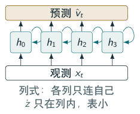
构造式网络分阶段加特征：旧特征冻结，新特征读旧特征的输出。冻结的特征不再改，新特征的敏感度也只含它自己的参数，于是单元之间可以有连接，代价仍然不大。两者合起来是列式构造网络（CCN）。它与本章其他方法的关系是：新列内部的参数用本节的梯度训练，误差沿列内的敏感度传回写入的那一步；列的加入则是离散的结构步骤，每隔一段时间长出一批新列，与 20.5 节的生成与检验同类，区别是 CCN 不检验新列是否有用，也不淘汰旧列，旧列只是冻结。CCN 可以看作连续梯度与离散结构步骤合在一起的一个原型。
设定。 痕迹条件作用任务：六个条件刺激中每次有三个出现，共 种组合，其中 种在 到 步后跟着无条件刺激（US），两次试验相隔 到 步，另有 个干扰输入。学习器用 LSTM 单元预测 US 的折扣和（，），每步的计算预算约 次浮点运算，运行 万步。
结果。 在 个种子上（原文图 4），列式网络胜过最好的截断 BPTT（截断长度 、 个特征），构造式网络与之相当，CCN 最好。算力相同时，截断长度远小于最长依赖（ 步）的配置明显变差（图 5）；放宽预算、让截断够长，截断 BPTT 可以追近 CCN，但每步计算约为 CCN 的 倍（图 6）。在 Atari 的策略评价上（ 输入， 个种子，图 8），CCN 的误差在多数游戏上更低，不少游戏低到五分之一；Breakout 上约高 ；BeamRider 上两者都差。三种变体的平均相对误差都低于截断 BPTT（图 9）。Javed、Shah、Sutton 与 White，JMLR 24(256)，2023，图 4–6、8–9
这项证据改变的认识。 限制连接方式可以换来精确而便宜的敏感度，在相同计算预算下胜过截断。
局限。 只做预测，任务不变；冻结的特征不能再改，世界变了以后旧特征可能失效（这一条是本课的整理）。
不同意见 有人认为列式结构限制了表达力，单元之间不能相互作用；也有人认为截断简单，硬件常常不紧，加长窗口就够了。CCN 一方的回答是：依赖有多长事先不知道，截断窗口没法预先定好。
用一步反馈同时学习读出与递推
不等到站：自举标签。 上面的更新要等到站以后才能做。学习器也可以在尚未到站时，用下一步的预测构造自举目标。给定预测问题 （第 19 章），令 ，在历史上定义 ，就有了一个不随编码器换坐标而改变的答案。要预测两步内能否首次到 ，可在首次到站时取 ，其余步取零，在首次到站或期限结束时令 ，此前取 1。在亮左的 若当前预测为 ，到 时剩一步的预测为 ，第一步尚未到站，用后继预测作标签，误差 。
算法 20.3 用一步反馈同时学习预测读出与状态递推。 预测误差 同时改读出权重 和递推参数 ； 的改量是 乘读出梯度再乘敏感度 。
- 输入问题 、行为 、步长 ；初始化 、 取小值、；对 执行第 1–4 步。
- 往前带：，。
- 用旧参数读出 、；，。 是停止梯度的记号：这一项求导时当常数看，不再往回求导。
- ，按 采样时 。先算 与 ，再同时加上。
- 时这一趟问题截止，智能体照常走下去；下一趟在 重新写入， 清零。
整个 lifetime 里第 1–4 步一直执行，不终止。更新顺序要守住：先用旧参数读出两端、算出误差，再把两个改量算好、同时加上，下一步才带着新的 往下走。第 4 步的截止只是这一项预测问题在一趟里结束，配送照常继续。本算法往前带完整的敏感度，不做截断；仓库每趟在 重新写入，敏感度也随之清零，所以不需要截断长度。仓库上，在 置 ，其后 ，；到 时 、，上面亮左的数例给出 。在 只剩一步，标签就是到站结果 ，下面的一次更新是这个算法的特例。
与第 19 章的算法相比，第 3 步多了 的改量：同一个误差乘上读出梯度与敏感度，写进编码器参数。把 当作给定数值的做法叫半梯度 TD；若对同参数构造的整个平方残差求导，还会出现未来读出的导数，得到另一种更新。对冻结标签求得的半梯度，在非线性、离策略、自举三者同时出现时没有一般收敛保证。Sutton 与 Barto，§9.3 · 转移相关的延续系数
一次更新： 从 到 。 的指示以 的概率正确，递推同上。按固定向左的规则查询是否到 ，标签 。读出固定为 ，损失 ，步长 。一次样本： 亮左，向左到 （）。
| 步骤 | 计算 | 结果 |
|---|---|---|
| ① 递推 | ||
| ② 读出与误差 | ||
| ③ 梯度 | ||
| ④ 更新 | ||
| ⑤ 同一历史再读 |
亮右而向左到 （）时，，，误差与敏感度同时换号，梯度同为 ， 同样升到 。指示错误的样本则把 往下拉。对 与 取期望， 平衡点 ，此时 处报 ，与真实条件概率一致。从 出发的期望一步为 。
时记忆完全丢失，只能报 ； 照抄指示； 是两类 Bernoulli 方差 的均值。设计者并未给出 ；它是预测误差在这组历史上的平衡点。平衡点由两类样本的比例决定：指示正确的样本把 推高，指示出错的样本把它拉低，两者在 处相抵。所以单次样本把 推向哪边，不能当作长期的方向。
一次更新走了 ，离 还差 ，再走一次是否越过 ，取决于步长。期望梯度是 ，按期望走一步，离 的距离乘上 ： 时不会越过， 时一步就到， 时越过但来回收拢， 时越摆越远。这里 ，按期望不会越过。单个样本的梯度带噪声，步长大时 会在 附近来回跳；什么时候该停，后文再谈。
记忆系数 要从逐趟的到站标签里学出来，单个样本只给出带噪的方向。按“抽一趟”，第 1 趟取亮左、向左到 ，计算过程按上表①–⑤复现 从 到 、再读为 ，并列出期望一步 ；之后指示按正确率 抽取。左图是平方风险曲线与当前 ；右图实线是逐趟的 ，虚线按期望梯度走，两者都趋向 。选“中间一格走廊”与“只回传一步”，第 1 趟的梯度由 变为 ， 走得更慢。把 中途拉到 ，直达时 改号，走廊一格时 停在 附近。
预测不准的三种来源。 固定起点分布和目标行为，令 为平方可积的完整回报，，。由于 由 确定，两次取条件期望给出 三个残差的交叉项期望均为零。第一项是知道完整历史后仍有的随机性；第二项来自状态合并了未来均值不同的历史；第三项是读出尚未学准。在仓库上， 时第三项为 （读出把 报成 ），第二项为零，第一项为 ； 时第二项为 。即使把现有读出训练到最优，第二项仍在；一次大的预测误差本身无法指出编码器应记住哪条线索。
覆盖。 实际行为 决定学习器能更新哪些来路与动作。如果 ，在相关历史有动作覆盖且概率已知时，乘 可将给定历史的这一步动作按目标策略加权。来路的出现频率仍取决于 。即便训练目标固定，某一类历史很少到访，记住它的好处也可能几乎不进入共享参数的更新。第 19 章的预测覆盖
20.4 控制误差与梯度干扰课件
20.3 节让预测误差把 校准到 ， 处的预报准了；预报准还不保证路选得好，章首的第二条困难尚未处理。本节让回报也来训练这份记忆，看它走哪条路回到 ，又是否与预测误差相冲突。到转角时两个动作原本等可能，某次选对了路，未来主奖励高于行动前的预期；有限期的策略梯度沿增加这次所选动作概率的方向更新，导数沿相同的状态递推回到来路上的写入参数。
有限期限的策略梯度。 第 11 章带基线的策略梯度是 ；这里把 也算进参数。固定初始分布，按 行动， 由 递推。合记 ，，目标 。 是行动前就能算出的基线。 这里假设有限期限、策略可微、支持不随参数变化，并允许求导与积分交换。④说明控制信号与预测误差走同一条路回到 ，只是乘的数不同：预测用 ，控制用 。④ 的两个因子各有含义： 说状态变一点，所选动作的概率变多少； 说 变一点，状态变多少。两者相乘再乘回报差，就是 的更新方向，走 20.3 节两路反馈的下半路；回报差为正时，这一项提高所选动作的概率，并改写先前递推中写入记忆的方式。Actor–critic 用评论器估计的优势 代替括号中的数，并在策略这一步将它固定；近似评论器会影响更新的偏差。预测头问这条路的后果是多少，actor 问从这段来路增加这个动作的概率是否合算。两者都依赖 ，但奖励预测校准和动作排序所需的历史区别可能不同。Sutton 与 Barto，§§13.3–13.5 · Williams，REINFORCE，1992
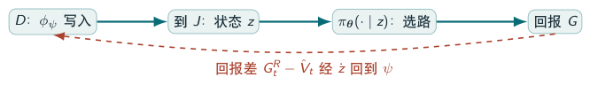
仓库主例：控制误差只约束乘积 。 沿用有噪指示与 。策略 。每趟回报：选路与真实一侧相符得 ，不符绕行得 。跟随指示的期望回报 ，违背时 ，于是 一次样本：、，亮左，选左，到 ，。
| 量 | 计算 | 值 |
|---|---|---|
| 选左概率 | ||
| 基线 | ||
| 相对回报 | ||
| score 对 | ||
| 样本梯度 |
时 处处成立：、、、，控制信号一直把 往上推，在 没有停点； 时策略不读 ，控制信号到不了 。 与 给出同一策略 和同一 ，在 对 的曲线上落在同一点，好比长 宽 与长 宽 的两个矩形面积相同；预测风险却分别是 与 。控制误差分不清这两组参数，它只看乘积是否让学习器更可能选中正确的路，而且乘积越大越好。把 定在 的只有预测误差，所以回报更高不能当作状态更准，这两个要求由两种误差分别施加。
梯度干扰。 同一编码器服务两项损失 ，记 。固定同批历史、读出与各自的目标数值，仅沿 更新时， 点积为负时，为 走的一小步会使 上升。在仓库上取 、，预测损失 ，控制损失 ：，，点积 。按控制信号走一步（）， 升到 ，预测损失一阶增加 ，精确为 。 时两梯度同号，控制信号帮预测往上走；越过 后两者反向。若同时沿 更新， 的一阶变化是 ；负点积单独决定不了联合步的符号。这里测量的是一次更新对给定样本的局部作用；策略随后改变访问分布，同一点积无法预告整个 lifetime 的控制收益。这是一阶结论：只对小步成立，步长有限时要看曲率；点积为零时，一阶项给不出结论。 多于一维时，点积的符号还随参数坐标改变：取 ，在 坐标下的点积是 ；用预条件 更新时，应看 。仓库上 只有一维，正的重标度不改符号。Yu 等，梯度冲突的定义，§2.2 定义 1
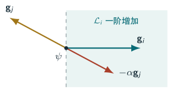
Zheng 等在 DeepMind Lab 的循环编码器上分别接通、截断主任务返回编码器的梯度，让预测问题继续训练表示，从实验上区分了这两条学习路径。截断只规定求导路径，别的读出仍会读到改动后的状态；两种误差必须共用许多参数、又没有可分结构时，本章没有给出解法。Zheng 等，§§3、5 及图 7
还有一种困难会在状态容量有限时出现。给同一条路线加入与行走方向、奖励和行动后果独立的背景图案，预测整个画面仍会奖励准确记住背景。Voelcker 等在线性、固定策略评价及其双时间尺度假设下，给出了重构和 TD 联合学习所得特征偏离最佳价值表示的条件。检验这种解释，可以保留同一批潜在路线、动作与奖励，只替换背景，比较单独训练预测、与价值共同训练、只训练价值时的留出误差。论文的神经网络控制实验在不同游戏和观测条件下得到不同排序。开放行动后，还要观察学到的差别是否实际改变路线和收入。Voelcker 等，命题 6、§6 相关研究问题
共享表示更新的直接效应与后续回报
固定同一段可重算的历史 和查询条件 。设第 个读出为 ， 是其私有参数， 是由 沿历史递推诱导的编码。可微时，它的一阶变化来自两条直接路径： 只更新技能（一段固定行为，第 21 章定义）模型的私有参数，其余私有读出的直接变化为零；但规划器若把该模型的输出当输入，动作评分仍会沿模型到规划器的路径改变。更新共享编码器，则即使旧头权重都冻结，每个读出仍可能沿第一项变化。旧模型保存的终点若写在旧坐标中，模型的输入和输出都须适配。即便新旧编码可逆，错用旧终点也会使下一次备份出错；若编码还改变内部策略或停止规则，同名技能的真实后果也可能已经改变。可分别固定历史、技能的实际执行规律和继续价值，核验这些不同来源。表示变化后的模型复用
常见诊断是固定一批历史、同一权重分布和两项不随此次求导改变的标签，计算损失 对共享参数的梯度 ，做一步 ，私有参数保持原值。若损失梯度在邻域内 Lipschitz，则 。若另有自举标签、规划目标或更新后的经验分布，求导时各自固定还是随参数变化，必须另行说明。
要看一项表示更新怎样影响全程回报，可把更新幅度等设计量记为 ，让完整学习器 此后照常行动、学习和规划。对有限离散历史，令 为它在第 步访问 的概率。 是它在历史 上实际选原始动作 的概率，即学习器的行动规则，包含预测、规划、探索和此前各次学习更新的作用。 是一步期望奖励。假定环境与初始分布固定、智能体仅通过行动影响环境，私有随机性独立于环境。在共同支持、可微且可交换求和与求导时，把每步期望展开即得 第一项计入过去的行动怎样改变了现在到达各历史的概率，第二项计入到达同一历史时行动规则怎样变化。若只在固定记录数据上求一个预测头的偏导，就会漏掉这两条路径。离散换槽或贪心决策不满足可微条件时，仍可直接比较两个完整规则的 。Schulman 等，随机计算图中的路径与概率梯度，定理 1 · Xu 等，经过基础更新的元梯度，§2
用卸货任务可将两层判断分开。先在同一批道路历史上分别试一次只改私有头、只改编码器的更新，冻结输入与标签，检查哪项预报、哪项模型备份或动作排序发生改变。再让含这次更新和省去这次更新的学习器从可比的完整初始条件独立行动，使用相同资源上限。报告后续实际查询与卸货的频率、关键来路的访问和各自的总奖励。若重估改善了告警预测，但两项规则在所有可达历史上始终诱导相同的动作分布、耗时与成本，则期望主回报相同；若更早开始询问，查询所损失的当前机会与避免错卸带来的后续收益都可观察。同一项区别可由一个预测器私有，也可由多个部件共用；第 25 章给出这两种写法的有限期回报差与拆分条件。
共享特征对不同读出的影响
第 11 章的 actor 与 critic 可以共享编码器；持续维护的 GVF 与模型也可能读取同一表示。取原三站实验记录中的一次 A 到 C 执行，实际总奖励 、时长 。用下面的单参数局部模型隔离共享路径： 三个读出系数保持固定。初始 时，时长预测 6、奖励预测 3、去 C 概率 0.5。只优化时长损失 ，梯度为 ；步长 0.01 使 变为 1.06。时长预测升至 6.36，时长损失下降；奖励预测升至 3.18，原本准确的奖励头产生误差；去 C 概率升至 0.529964，尽管没有使用策略损失。
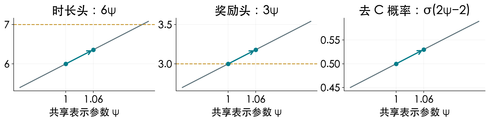
停止目标的梯度只规定求导路径，不会阻止其他头读取改变后的特征。这个计算说明可能的干扰路径，控制是否获益还取决于随后行为与实际反馈。
特征重叠。 在线性读出 上，若一次更新为 ，另一处 的预测同时改变 。共用的坐标越多，单步更新传播得越广；只要后果确实相似，这种泛化就能节省样本。Meyer、Adam White 与 Machado 比较了多种离散与连续表示，用世界模型精度、控制表现和变化后的适应速度测量这种取舍，消融结果指向稀疏性与二值化。上述等式给出固定特征、线性读出的一个解释；学得的编码本身也在变化时，另有来自编码器更新的项。Harnessing Discrete Representations for Continual Reinforcement Learning
价值修正在状态之间的泛化
上例考察同一组参数服务几个读出。还可以固定一个价值头，考察一次修正会传到哪些状态。若一条路因临时封闭需要下调价值，共享特征就决定了其他路连带下调多少。跨状态传播适合学习平日的通行规律，遇到短暂封路时则希望把修正集中在相关位置。
Anand 与 Precup 将总价值写成长期基线 与暂态残差 的和。每步用总价值构造 ，快更新写进暂态部分。较慢的更新以当时的总估计为目标拟合 ，随后衰减或重置暂态部分。两部分各用自己的特征，因而可以有不同的泛化范围。在图像控制实验中，快表将相似观测映入同一桶，再把误差按权重分给命中槽及其邻槽。论文图 5(c) 的五状态任务每类使用 250 张图，先在一个任务上训练 25 万步，再换成新任务，用随后 5 万步观察适应。该方法未收到切换提示，恢复快于在边界重置末层或整网的对照。这个比较回答了改变后学得多快；旧价值的保留原文未报告。若要检查旧价值是否仍可读，可在旧任务重现、首条新反馈到来之前，分别测 与 ，再记录后续学习曲线。Anand 与 Precup，2026，§2 式 (1)–(6)、§6 及 §7 图 5(c)
两种办法的得失与固定记忆的对照
干扰之后有两种部分出路。办法一：分开参数。 控制误差只约束乘积 ，分不清 与 ：两组乘积都是 ，按指示选路的概率都是 ，期望回报都是 ，预测风险却分别是 与 。于是可以让预测误差单独决定 ，控制信号只改 ，不再传回编码器； 学足以后回报一分不少，预测保持校准。它成立要两个条件：策略头有自己的参数补足 让出的部分；控制所需的区别，预测问题已让状态保留。第二个条件不满足时，截断控制梯度会让状态缺少选路要用的信息。办法二：加权合并。 两种梯度相加，控制一路取较小的权重 ，沿 走，预测损失的一阶变化是 。固定 、 时，两路在 相抵。三种做法在 处的停点如下。
| 时 | 分开参数 | 加权合并 | 只用控制 |
|---|---|---|---|
| 停在 | 一直升向 | ||
| 每趟 | |||
| 预测风险 |
还小时，加权合并每趟多得约 ，代价是风险多 。可是 也在学； 只依赖乘积，分开参数可以让 长到 来补足。价值差是否留下、留在哪里，要让两组参数一起学才看得出。
加权合并容许多大的 ？在 、 处，、，只要 ，预测损失仍下降。越靠近 ， 越小，容许的 趋于零。所以固定 时停不到 ：停点 ， 处报 ，风险 ，就是上表中间一列。
仓库实验。 每趟从 出发，在 看到有噪指示，在 选路：选对直达 ，三步得 ；选错经 、 绕行，五步得 。到 后不论走哪条路，都知道 在哪一侧，所以每趟都有预测标签。时间 数的是环境的步，一趟要走好几步：随机选路每步平均 ，跟对指示每步 ； 步约合 趟。所有学习器用 REINFORCE 学 ，步长 ，基线为回报的滑动平均（系数 ），初值 、， 限在 ，每趟结束时更新一次。区别只在 ：固定为 或 ；分开参数以步长 按预测误差改 ；加权合并在同一步长下加上 倍的控制梯度；端到端只按控制信号改 ，步长同 。另有一个学习器不在 写入，作对照。做两组运行：一组 步指示不变，；另一组从第 步起 变为 ，指示的意义反了过来。每种学习器每组独立运行 次取平均。下文 是每趟期望回报，由手算得到； 是 lifetime 累计奖励，按步累计。“恢复步数”指反转后，平均每步奖励的近 步平均首次回到 所用的步数。
| 学习器 | 指示不变 步 | 学成的 ；预测风险 | 反转后 步 | 反转后恢复步数 |
|---|---|---|---|---|
| 固定 | ； | 未恢复 | ||
| 固定 | ； | 未恢复 | ||
| 分开参数 | ； | |||
| 加权合并 | ； | |||
| 端到端 | ； | |||
| 不写入 | —； | 一直约 |
的标准误都在 以内。
先看世界不变时。前三千步里，固定 起步最快，端到端次之，固定 最慢，原因在 ： 的梯度与 成正比， 大一些， 的步子就大一些。六千步累计回报的排序是固定 得 、端到端 、加权合并 、固定 得 、分开参数 。学 的三种办法里最好的比固定 少 ，最差的少 ，都在三百以内；不写入的对照只得 ，是下界。这是一位记忆、一个标量的简单世界上的初步结果：任何 都能支持最优选路，世界不变时学 本来没有可多得的东西；走廊变长、记忆有写入噪声时可能不同，见本章开放问题的世界丙。分开参数全程比加权合并少约 ，比端到端少约 ，差距大半落在前期 还没长大的时候；三者学成后的风险是 、、。
再看第 步以后。指示现在八成指错，所有学习器的每步回报跌到 到 。固定 的学习器要改过选路， 必须从约 到 穿过零变成负数；策略已经饱和，似然比项很小，三千步后每步只回到约 。学 的三种学习器把 由正翻到负，记忆的含义反了过来， 不必变号，几百步内回到每步 ：加权合并用 步，分开参数 步，端到端 步；后三千步累计 、、，固定记忆只有 和 。分开参数的预测标签每趟都有，不靠探索；端到端的 梯度乘着很大的 ，也快，但方差大。这些数只对本节的初值、步长与 步窗口成立。
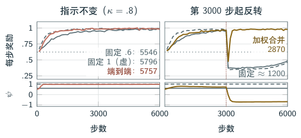
敏感度。 每组 次运行。控制步长取 、、，预测步长取 或 ，或从 起步，固定 都没有恢复；加权合并的全程回报在六组中四组最高，另两组比端到端少不到 。控制步长取 时，端到端反转后只得 ，也没有恢复，分开参数与加权合并分别得 、；它们改 的主力是预测误差，每趟都有，方差小。 取 、、、 时，反转时的 为 、、、，反转前的风险为 、、、，全程 为 、、、： 越大，回报越多，校准越差。选哪一点，取决于这份记忆除了选路还要回答多少别的预测问题；仓库里只有一个预测问题和一个控制问题，这组数不能说明一般情形下 应取多少。
与手算相比，加权合并在反转实验中 停在约 ，低于手算的 ，并缓慢回落： 长大后 变小，控制一路的推力随之减弱。
由此可得 20.4 节的结论（仓库一位记忆上）： 学够以后两种办法回报相差无几，差别在前期回报、校准与恢复速度。两种误差在同一个参数上相抵时，分开参数最准，前期回报稍慢；加权合并用一点校准换回报和恢复速度；完全交给控制，回报最早到手，校准最差，步长一大就不稳。记忆参数可学的好处，主要显在世界变了以后：能改写记忆含义的学习器，比只改读出的学习器恢复得快。两种办法都只调已有参数，递推里没有存灯的位置时怎样调都记不住，这是 20.5 节的问题。
不同意见 有人指出这些差距都不大，百分之二的回报差在别的世界里可能淹没在噪声里，不足以在三种做法之间作选择；表上的数只说明了取舍的方向。有人指出这里的变化恰好是一位记忆的含义翻转，一个标量就能吸收；若变化需要记住一条新线索，学 也无能为力，那是 20.5 节的问题。也有人指出固定 恢复不了，部分要怪策略梯度在饱和处太慢；加熵正则，或在误差突增时重置 ，固定 可能恢复得快得多，所以这里的差距只衡量这几个学习器，固定与学习的一般比较要另做。还有人指出 与 在乘积里地位对称，哪一个先动只取决于哪一路的梯度乘数更大；把 的步长加到 ，固定 仍恢复不了，但这只检查了一种参数化。分开参数成立，靠的是仓库里预测问题恰好要求记住选路所需的那一位；预测问题若问别的事，截断控制梯度会让状态缺少选路要用的信息，那时只用控制反而更好。除了固定 ，也可以让它随两路梯度的夹角变化，例如只保留控制梯度中不与预测梯度冲突的分量；这类做法在多任务学习里有人研究，本章没有在仓库上检验。
20.5 候选记忆的提出与检验课件
梯度到不了的地方。 前两节的梯度做的是微调： 是一个已有的数，它的敏感度 不为零，误差告诉它往哪边走。若递推里根本没有在 写入这一步， 处的状态只剩已过 ，就没有哪个参数的变化能让 处的读数随指示变化：两段历史并成一个状态，梯度分不开它们。在仓库上，递推里若没有一个位置存 处的灯， 怎么调都记不住灯；要先加一个位置，梯度才有东西可调。上面实验里不写入的学习器就是这样，六千步里每步一直约 ，与随机选路相同。新添一位记忆要换一种做法：先提出一个候选，再在留出的行程上检验它是否降低了读出误差。第 18 章的意外位也是人加的一位记忆，它记的是学习器自己最近是否总在意外；第 18 章把这类关于自身处境、可以计算的读数称为感受（本课提法，尚未检验）。不论记的是世界还是自己，加一位记忆都要靠提出和检验。
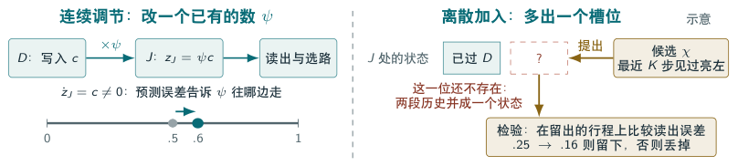
不同意见 一种看法认为提出与检验可以省掉。依据是：大网络里每个输入都已连到许多隐单元，新的一位早已存在，只是权重很小；梯度可以把它慢慢长出来。另一种看法认为仍然需要提出，依据是：这条路要靠足够长的回传和足够多的冗余单元，截断长度和容量有限时，许多线索仍然到不了。也有人指出随机初始化的成批递推单元（如回声状态网络）已经提供了一批现成的候选，梯度只做挑选，这与提出再检验是同一件事的两种实现。还有人认为提出候选的规则本身也可以学，梯度与提出的界线因此会变模糊；本章不讨论这一层。
原型：生成与检验课件
梯度添不出新的记忆位，新添一位要先提出、再检验。这个原型把提出与检验做成最简单的循环：位子数固定，不断把没用的特征换成随机生成的新特征。Mahmood 与 Sutton 在一个监督学习问题上检验提出候选特征、按用处保留的做法。输入是 个二值位；目标由 个随机阈值单元（LTU，阈值参数 ）的输出加权求和，再加 噪声，所以最小均方误差为 。学习器也用一层随机 LTU 作特征，输入权重取 ，输出层用 LMS 学。记 F: 为固定 个随机特征，S: 为 个特征加搜索：定期把效用最低的特征（按输出权重的绝对值估计）换成新生成的随机特征。
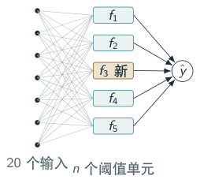
结果。 原文图 2 中，F:1M（一百万个固定特征）只比 F:100K 好一点；图 3 中（ 次运行），S:1K 在 万个样本时胜过 F:1M；图 4 中，用 Autostep 步长的检验器最好；图 5 中，在已有特征之上加搜索，均方误差再降 ，额外计算不到 。本课重跑（ 次运行，各 万样本，取最后 万样本的均方误差）：F:100 为 ，F:1K 为 ，F:10K 为 ，S:100 为 ，S:1K 为 ，标准误在 到 之间。S:1K 胜过特征多十倍的 F:10K；但前 万样本上 S:1K 为 ，不如 F:1K 的 ，搜索要过一段时间才回本。F:1M 本课没有跑，那一条照引原文。Mahmood 与 Sutton，Representation Search through Generate and Test，AAAI 2013 Workshop WS-13-12，图 2–5
这项证据改变的认识。 特征数固定时，按用处替换比一味加特征有效；梯度只调已有特征的权重，搜索补上了换一个特征这一步。
局限。 监督学习，目标固定，特征没有记忆，作者称这些结果是初步观察。用到状态构造上，候选是递推特征，检验要在留出的行程上做，即本节后面候选记忆槽的两阶段流程。
不同意见 有人认为输出权重的绝对值是很粗的效用估计，输入尺度不同或特征相关时会误判；也有人认为随机生成太浪费，大多数候选很快就换掉了。支持者的回答是：在梯度到不了的地方，粗糙的搜索仍能前进。
四区仓库里的指示灯课件
把本节的表示问题放到第 15 章的四区仓库（读法）里：灯的含义会翻时，状态里放灯下 B 高价的预测并加乐观，比放灯本身高 ；只放预测时区间含零。仓库里有一盏灯，约每 步亮灭一次。B 站的支付与灯相关：有时灯亮时 B 给 、灯灭时给 ，有时反过来；这层关系的符号约每 万步翻一次。另设一个对照条件，符号固定不翻。天花板 是知道当前关系、同样以 随机探测时最好的率。学习器都是差分 Q 学习，只在状态里放什么上不同：不看灯；灯直接进状态；用生成与检验（Mahmood & Sutton 2013 的思路）在灯和三个无关比特里挑；以及下面说的放预测。 万步， 个种子。
| 条件 | 比较 | lifetime 率 | 最后 | 种子 |
|---|---|---|---|---|
| 符号固定 | 灯进状态减不看灯 | |||
| 符号会翻 | 灯进状态减不看灯 | |||
| 符号会翻 | 生成与检验减不看灯 | |||
| 符号会翻 | 放预测（步长 ）减灯进状态 | |||
| 符号会翻 | 乐观预测（）减灯进状态 | |||
| 符号会翻 | 乐观预测（）减灯进状态 | |||
| 符号会翻 | 乐观预测（）减灯进状态 | |||
| 符号固定 | 乐观预测（）减灯进状态 |
关系不翻时，灯有用：把灯放进状态，lifetime 高 ，最后 高 ， 的种子在约 万步时到天花板的九成。关系会翻时，把灯放进状态反而低 ，最后 与不看灯一样；生成与检验在每个种子上都挑中了灯，挑的过程还要花时间，比不看灯低 。把运行拉长到 万步复核，结论不变：关系会翻时灯进状态比不看灯低 ，不翻时高 。按每次翻转之后少拿的奖励算，三种学习器没有可分的差别；差在 lifetime 率上。一种解释是：灯的同一个取值，在两段时间里意思相反，Q 表上灯亮的那些格要反复重学，灯又把经验分成了两半。
改法是把灯换成 20.1 节的检验的预测。对灯的每个取值记一个数 ：在灯为 时到 B 拿高价的概率，每次到 B 拿到支付就按步长更新。状态里只放一位 。关系一翻，预测在几次到 B 之后就跟上，状态里那一位的含义始终是现在去 B 多半拿高价，Q 表不必重学。
单这样做不够。关系会翻时，十二个诊断种子（步长 与 各六个）里有九个，到最后两个灯的预测都在 以下：机器人不再专门去 B，预测也再得不到纠正，停在那里。表中步长 的一行只高 ，区间含零。再加一条：每一步把两个预测都往高价推一点，。 时，从 推回 约要两千三百步。久不检验的预测慢慢变乐观，逼机器人去 B 再看一次。这与 Dyna-Q+ 给久未试过的转移加奖励（Sutton & Barto 2018，8.3 节）是同一个想法。二十个种子上，关系会翻时比灯进状态高 ，最后 高 ，到天花板的 ；关系不翻时与灯进状态没有可分的差别，不吃亏。 取 时方向相同但六个种子不够分开，取 时推得太快，机器人常白跑 B，没有收益。要把收益只归给放预测这一做法，还缺一组不加乐观、 个种子的对照。
是看过种子 – 的结果才挑的，按事后挑选算，上面的区间偏乐观。换一批没有用过的种子 – 重跑：关系会翻时，乐观预测减灯进状态 ，最后 ；灯进状态减不看灯 ；关系不翻时乐观预测减灯进状态 。与原来的种子一致。章末的世界丙把走廊拉长，再看指示会翻这件事。
不同意见 有人会说这是为这个世界量身做的：只有一个站与灯有关，预测只记两个数， 也是从三个值里挑的。要推广到多个站、多种线索，每个线索都要配一个预测和一个乐观速率，这件事本节没有做。另一种看法是，久未检验转乐观这一规则只是把探测换了个名字。这有一部分对：它的确是定向的探测；不同在于它只对预测本身乐观，去哪里探测由预测决定，不是随机走。还有一种看法是：乐观预测高出的 里，有多少来自状态里放预测、有多少来自多去 B，本节没有拆开。可以在灯进状态的学习器上同样按久未检验加探测，看能否得到同样的收益。
候选记忆槽的提出与检验
前几节的梯度只能调整已经存在的分量；若递推根本没有写下某条线索，误差回传到的敏感度为零。传感器只报告读数，机器人怎样决定哪个旧读数值得带到下一次选择？先给它一项可检验的工作：在同一转角执行约定的两步规则 ，预报两步内是否到站 。行动接口、短规则和到站事件在这里给定；需要发现的是行动前的可见历史 中，哪段经验可以改善这个预报。
设 是时刻 已到达的输入。取有限的离散通道；连续通道则需先规定分箱。从已经出现的通道及其取值中抽取一个符号 ，从 中抽取记忆长度 。相同的候选只留一份。为每条入选规则分配一个初值为零的倒计时： 这个候选表示最近 个输入中是否见过 。只需从上一步的倒计时和本步输入递推，经过 步后，其值与生成前的经历无关。它能记住短时线索，若需一直保持到下一提示才改写，还要增加别种候选。Samani 与 Sutton 在痕迹条件作用与痕迹模式辨识任务中研究了带衰减的递推特征和观测组合。下面的倒计时和检验准则是本节构造。Samani 与 Sutton，§§3–4、算法 1
仓库上的候选。 设旧状态在 只剩已过 ，两种指示等频，取 “ 亮左”，执行规则固定为向左两步。设 到 为 步，记忆长度要 ，到 时倒计时还剩 ；也不能长过一趟，否则上一趟的灯会混进这一趟。先冻结基准状态 与旧预报 。在给定 、同一执行规则下，残差 在两组 中的均值之差，等于两组到站率之差，因为相减时旧预报抵消。
| 处的读出 | 的预报 | 的预报 | 平方风险 |
|---|---|---|---|
| 沿用旧读数 | |||
| 只重估常数 | |||
| 加入 ，分组估计 |
两组平均残差分别为 和 。只在原状态上重估，最优预报为 ；按第 18 章的条件均值分解，平方风险从 降到 ，改进 。再按 分开预测，风险降到 ，改进 。后一步才衡量这项历史区别提供的信息。分组后的 与连续记忆在 时的风险相同，因为二者在 处给出同一个条件概率。条件均值与风险差
有限容量下的在线更新。 取有限的基准状态，预先分配在用槽和少量候选槽，规定发现、检验两个阶段各有多少次起点机会。下面的查询互不重叠，只暂存一条待结算的记录。
- 生成并收集。 每步递推在用与候选倒计时。在空候选槽中抽取新规则，待其经历 步再参与预报。到转角时以预定的正概率启动查询，在执行前记录 、各候选 和 ；两步后用真实 更新每个 格的计数、命中数与残差和。查询所用的两步计入交互预算。
- 拟合并选定。 对两组均有样本的格，用样本代入 并按预定起点权重汇总，在发现期选出一项候选。 为该格 的比例， 为分组命中率；仓库上 ，。用同一批执行拟合两种读出，旧头只用原状态，新头使用新增特征。容量已满时，事先指定一个待替换槽；发现期就同时为保留全部旧特征和用候选换掉该槽累计实际可用的表项，分别拟合。
- 留出检验并决定。 冻结候选与两套读出。下一段行程在每个查询前记下两者的预报，用同一结果结算平方误差差。按共同起点权重汇总，按独立运行或时间块报告波动。若所需各格的样本数达到预设下限，且平均改善超过事先规定的幅度，才采用候选；否则保持当前表示，并区别报告无改进和覆盖不足。若某线索只出现在另一条支路，要先改变上游选路才有机会检验它。在转角随机试动作补不回缺少的来路；从未见过亮右的数据无法检验 一组。
在线实现只需将同一条反馈送到两个阶段各自维护的统计量。例如发现期的表项由查询前保存的状态索引；不能在到站后读出当时的新状态去索引它。
收到 O⁺_t：递推所有倒计时，给已预热的候选读出 χ_t。
查询启动：存起点状态、候选位与旧预报；检验期也存候选头预报，再执行 π_ex。
反馈到期：读 Y，取回查询前保存的记录。
发现期：对相应表项增加执行次数、Y 与分组残差之和。
检验期：累计 (Y－旧头预报)²－(Y－候选头预报)²，按起点格计数。
发现期满：选定候选，从发现期表项拟合两头，固定两头并开始检验期。
检验期满：检查各格覆盖；按预定起点权重比较误差，作出采用或保留决定。等容量替换同时可能丢掉原特征的信息，因此要比较两种完整读出；新增一位时得到的 不能直接作为替换收益。 是加入特征后可达的风险差，有限样本的学习器在新行程上比较的是实际读出之差。若所执行的固定行为（技能）持续改写，即使没有版本标签，两个阶段也可能在回答不同的问题。可固定能复现的原始动作序列再测；执行规律无法辨别时，只能报告所遇行为混合下的风险。单靠被动记录，还可能遗漏两种行为在未访来路上的区别。保留候选是否改善控制，须让学习器自己选路，并把探测步数与维护开销计入同一预算。
Sutton 怎样看状态特征课件
Sutton 一系列工作对状态特征有一组一贯的主张：状态是智能体自己算出的一组特征，这些特征应是对未来的预测，并且可以换掉。下面五条各有出处；把它们放在一起看出的共同结构是本课的整理，单列在最后。
状态由智能体构造。 Sutton 与 Barto 第二版 §17.3 把状态写成一个更新函数的输出 ：旧状态、上一个动作、新观测进去，新状态出来。环境只给观测 ，状态属于智能体。本章的编码器 就是这个更新函数带上可学的参数。
特征可以是对未来的预测。 PSR 用一组测试发生的概率当状态，20.1 节讲过（Littman、Sutton 与 Singh，NIPS 2001）。Horde 把智能体的知识写成成千上万个 GVF，每个 GVF 由一个线性的离策略 TD 学习器回答，所有学习器共用同一组特征（Sutton 等，Horde，AAMAS 2011），预测即知识。
特征要能换。 生成与检验固定特征的位子数，按输出权重的大小评每个特征的效用，定期把效用最低的换成随机新特征，本节前面的原型讲过（Mahmood 与 Sutton，2013）。持续反传把同一思路用到深网络，按效用把少数单元重新初始化；第 23 章看到它保住了可塑性（Dohare 等，Nature 2024）。
每个特征一个步长。 IDBD 对线性学习器的每个输入各维护一个步长，用元学习调整：与目标相关的特征步长变大，无关的变小（Sutton，IDBD，AAAI 1992）。第 23 章的 TIDBD 是它在 TD 上的版本。
特征是规划的起点。 OaK 的环从特征出发：特征提出子问题，子问题学出选项，选项学出模型，模型用于规划，规划的结果再回来评特征的用处。第 21 章讲过，这个环里只有一段有发表的算法，这里按报告转述。
本课的整理：这些工作共有的结构是，非线性放在特征的产生与替换上，那是一种离散的搜索；在特征之上的读出尽量是线性的，所以学得稳、步长可以按特征定、可塑性不会丢。本章 20.3 节走的是另一条路，让梯度穿过递推去调状态。两条路线互补，本节的候选记忆槽是把两者接起来的一个例子：候选由离散的提出产生，检验与读出仍按误差学习。
线性与非线性表示课件
上面说 Sutton 一系列工作把读出尽量保持线性。线性读出学得稳、步长可以事先定，却造不出新特征；非线性表示能造特征，代价是收敛保证与可塑性。下表把两种表示的得失逐项并排，每一项都在前面的章节里讲过。
| 线性 | 非线性 ，或学出的递推 | |
|---|---|---|
| 梯度 | ，与 无关 | 随参数变，有驻点与平台 |
| 收敛 | 同策略采样、步长递减等条件下，半梯度 TD 收敛到投影 TD 不动点（第 9 章） | 同策略也可能发散（第 9 章）；离策略加自举无一般保证 |
| 步长 | ，可事先定（第 9 章） | 依赖曲率，随训练改变 |
| 可塑性 | 线性参照随任务数不下降 | 学过许多任务后学不动新任务（第 23 章） |
| 干扰 | 只经共享的特征 | 改一处动多处，旧状态的误差随之放大（第 9 章） |
| 新特征 | 不能造， 由设计者或生成器给 | 梯度能调已有结构；递推里没有的那一位造不出（本节开头） |
逐行看。线性读出对权重的梯度就是特征向量本身，与权重取什么值无关，所以平方损失是权重的二次函数，没有局部极小；非线性表示的梯度随参数变化，会出现驻点和平台。第 9 章证明过，同策略的半梯度 TD 配线性特征，期望更新每一步都更靠近投影 TD 不动点，样本更新还要步长条件；换成随参数变化的特征，同策略也能构造出发散的例子，离策略、自举、函数逼近三者同时出现时没有一般的收敛保证。线性时可以按特征的大小事先定步长：想用约 次更新学会，就取 乘特征平方和期望的倒数，这只是起始量级；非线性时有效步长取决于曲率，而曲率在训练中变化。第 23 章引的 Nature 2024 实验里，深网络学过两千个任务后，学新任务的准确率跌到线性参照附近，线性参照本身不随任务数下降。线性时一次更新只经共享的特征影响别的状态；网络里改一处动多处，第 9 章的实验里只学右半会把左半的误差放大十倍以上。最后一行是线性的短处：特征由设计者或生成器给定，读出学不出新特征。非线性表示能在训练中调特征，但梯度只能改已有的结构；递推里根本没有的那一位，敏感度恒为零，所以本节要先提候选、再检验。出处：Tsitsiklis 与 Van Roy，1997；Sutton 与 Barto，§§9.4、9.6、11.3；Dohare 等，Nature 2024。
学状态时多出的困难。 读出即使是线性的， 对 一般已是非线性：同一个 在递推里用几次， 里就有它的几次方，误差还要沿 送回写入的那一步。仓库上可以把这件事算出来。读出固定为 ，记 ，平方风险为 一步走廊时 ，风险是 的二次函数，只有一个最低点，和线性读出一样好学。走廊多一格， 用了两次，；20.3 节两步走廊的敏感度 就来自这里。
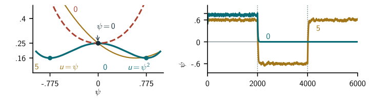
左图里，一步时最低点在 。两步时最低点挪到 ，最低风险仍是 ；但 处梯度为零，是一个驻点，学习从零出发就停在那里，风险是 ，等于什么都没记。指示反转、正确率变成 以后，最好的 应是 ，可 取不到负值，最好的选择只剩 。右图是随机梯度的实际过程，步长 ，每段 趟， 个种子。前 趟两种走廊都学到最低点附近，一步约 ，两步约 。指示反转后，一步的 跟着改号，中位数 趟到 ；两步的 每趟大约乘 ， 趟后小到约 。指示再反转回来，梯度正比于 本身， 每趟只放大约 倍，中位数要 趟才回到 ，一步走廊只要 趟。
这是非线性表示失去可塑性的一个最小例子：参数推到驻点附近以后，梯度本身变得极小，再有新的误差也推不动它。第 23 章深网络里饱和与死掉的单元属于同一类现象。作为对照，若把指示直接写进线性读出的特征，取特征 和 ，最好的权重是 和 ，风险 ，反转时只要第二个权重改号。线性读出学得快、不会卡住，前提是有人把 写进了特征；上表里线性的短处就在这里。
20.6 表示的充分性课件
20.5 节说明怎样得到递推里原来没有的一位记忆。本节问另一件事：学到的表示什么时候够用。先给判据，再看换一种多步走法时判据怎样变，最后看表示换了以后旧的读出能否复用。
共享智能体状态的充分性
先在仓库上看判据。若 处把亮左、亮右两段历史并成一个状态，向左能到 吗这一问题的答案一为 、一为 ，这个状态就不充分。若合并的是原来需要不同动作的两段历史，控制器就失去区分它们的能力。一般地，两段历史并成一个状态，凡要用到的读出，在两段历史上就必须答得一样。读出的用途决定哪些区别必须保留：
| 用途 | 要回答的问题 | 需要保留的区别 |
|---|---|---|
| 预测与执行 | 指定行为的后果，或一段固定行为的执行 | 给定行为的回报，或这段行为的启动、动作与停止（第 21 章称技能） |
| 规划与控制 | 走完这一段之后的剩余回报（规划文献常叫尾值）、可行动作与任务目标 | 各候选行为的规划估值；只选最优动作时，保留共同最优选择即可 |
这个判据就是第 18 章的充分性，只是读出换成本章学到的 。读出取遍全部测试时，它就是 PSR 意义下的充分，也就是对未来观测的马尔可夫性；若测试里含奖励， 在每个动作下都能按递推更新， 上的过程才构成一个 MDP；只对几项读出充分，不保证这一点。这样 20.1 节从完整预测即状态出发，到这里只需对所需读出充分结束，MDP 是两端重合的特殊情况；放宽换来的是一个更弱、也更可检查的要求。
还有一种用途是有时间限制的选路：要回答还剩几步、能否在期限内到站，就要保留到站所需的步数，以及它与选路时所见指示的关系。常见的误解是以为状态越细越好；上表最后一列说明，只需保留会改变所需答案的区别。下面换一个卸货口的例子，把判据写成式子，再按读者逐项列出要保留什么。
机器人再次到达卸货口，屏幕仍显示“就绪”。一种预测只问能否在两步内对接，控制器还要决定现在卸货还是先查询许可。许可从未改变对接动作的物理后果时，只保留影响对接的线索，足以回答第一问。若错卸的损失很大，而先前的返回信息透露了许可状态，控制器就有理由保留这条信息。要说明一份状态为何有用，得指明各项读出可用的信息及其要支持的决定。
在一个固定时刻，令 为行动前可见的历史， 为 诱导的共享编码。给定一组已经提出的问题或读出 ，把第 项所需的答案写成 。其中 是除共享状态以外提供给该读出的条件，例如本次查询的目标策略、剩余步数、当前技能或可用替代行动。在共同可达且 相同的历史上，存在精确读出 使 ，当且仅当 必要性来自相同输入只能给出相同答案；反过来，把每组历史的共同答案赋给该组即可。在有限离散情形这就构成读出，一般空间还要求相应读出可测。多个读出共用 ，这个条件须对实际要求精确保留的每一项成立。若要使 能在线更新，还须能从 、本步行动和新反馈计算下一状态。某组答案此刻能读出来，不自动保证它能这样递推，也不保证可用的有限网络已经学出了读出。Subramanian 等，信息状态与递推的条件
| 谁读取状态 | 在相同查询条件下，需要保留的区别 |
|---|---|
| GVF 预测器 | 固定目标策略、累积信号和延续规则，保留该回报的条件期望。若要报超时概率，就要另指定超时事件；单个回报均值未必决定它。 |
| 任务控制器 | 要准确评价每个动作，需保留各动作在同一后续规则下的价值。若只要求能执行一个最优动作，组内所有历史有一个共同可行的最优动作即可。 |
| 执行中的技能 | 若要逐步复现同一技能，须保留启动资格、期间的动作分布与到达后的停止概率。高层调用价值相同的两种执行，仍可沿不同轨迹交回控制。 |
| 技能模型与规划器 | 固定技能，记段内折扣奖励和为 、耗时为 、停点为 。对实际会用的继续价值 ，规划需要能区分 。若还要回答超过期限、停在何处等问题，所需后果的联合分布会更细。这里假设技能可启动、几乎必然停止且回报可积。 |
| 元学习器 | 在同一学习参数、剩余预算及后续规则下，比较采取两种不同更新后所能取得的未来主回报。例如两处路口的现有预报可以同样不准，但只有一处还会多次经过，在此处花一步检验可能更有价值。跨多个时刻保持的参数、迹和优化器状态也要按其实际接口提供（第 23 章）。 |
技能模型只需保持某组规划更新的结果，是价值等价思想（定义见第 22 章）的一个用法；扩大继续价值或策略的集合，会增加必须保留的区别。语言指令或人的偏好也可以作为历史中的可见信息。若效用权重未知，有给定先验与反馈模型时，可对已收到的反馈取条件期望或比较主动询问的价值；缺少这些设定时，应分别写出各偏好假设下的答案及其可能导致的选择。尚待推断的偏好或发现的技能不能当作已给查询条件 。第 26 章会在查询与行动的接口上讨论这一点。Sutton、Precup 与 Singh，Options 的执行与模型 · Grimm 等，价值等价的模型 · 语言与身体中的经验检验
有限记忆一般迫使若干区别共用一个状态。比较两种取舍时，把编码器、各项读出、更新与行动规则一并固定为候选学习器 。从同一初始分布 出发，按各自实际选择追踪 个原始步，以第 15 章持续控制问题定义的前 步期望主奖励 计分；存储、每步计算和交互预算取相同上限。查询、练习或重估若占用一次行动，该步的实际奖励已计入总和。若两种可行方案此后在每段可达历史上的行动分布都相同，而环境只从行动接收影响，则由逐步展开轨迹概率可知，它们的 相同。只让某个读出更准确，可能尚未改变这条行为规律。发现知识的后续用途
例如把许可位 和一个影响执行时长的信号 简化为两个独立、公平的可观测比特。到卸货口时看不到先前的信号，记忆只许留一位。设上层必须选择卸货或等待，许可时卸货、禁行时等待各得一分，另一个动作得零。记住 后，这次期望奖励为 ；若只记 ，则无论怎么按 选择，期望奖励都是 。对预测时长信号是否为 1 的读者，方向恰好相反：保留 的最小平方风险为零，只留 时为 。若未来只需反复做许可选择，且两个信号的生成不受动作影响， 次独立选择的期望奖励差为 。若以后还要按时长选择路线，两种记忆的排序就得按那些行动的后果重算。这个构造表明，多个冻结读出的误差可以描述记忆取舍；具体的任务机会决定了哪种取舍会兑现为控制收益。
前五节合起来：状态可以由预测构造，也可以由预测误差与控制信号训练，是否充分取决于要支持的读出。第 21 章在这样的状态上定义技能，启动集、内部策略和停止条件都读取这里的状态；若状态漏掉了指示，技能的调用价值就只能是两类历史的平均。
固定行为变化与状态表示的充分性
表示是否充分，还取决于在这个状态之上执行哪一种多步行为。“走法”指一段固定行为：按固定规则走几步再交回控制，第 21 章称它为技能，并给出正式定义。仍用有噪指示的仓库，在 比较两种走法：向左一步，走一步就交回控制；向左，直到到站，左侧通 时一步到站，通 时再走一步到 。要预测的是这段走法一步内结束吗。状态有两种：记住指示（，读出 或 ），或合并两种指示（，只能报同一个数）。
| 走法 | 亮左、亮右后一步结束的概率 | 记住指示的风险 | 合并的风险 |
|---|---|---|---|
| 向左一步 | |||
| 向左，直到到站 |
表的读法。向左一步不论指示亮哪边，走一步就交回控制，一步内结束的概率都是 ，记不记指示，风险都是零。直到到站时，一步结束当且仅当左侧通 ；指示以 的概率正确，所以亮左以后一步结束的概率是 ，亮右以后是 。记住指示的状态读出 或 ，风险是 ；合并只能报 ，多付的风险为 它就是两组条件概率之差 的平方乘 。编码不变、只换走法，亮右后一步结束的概率就从 降到 。这些数只用了指示正确的概率 、两侧各半和仓库布局，由手算得到。技能的启动、内部策略与终止条件见 Sutton、Precup 与 Singh（1999），§2。
这一段把本章接到第 21 章。那一章把向左直到到站这段走法当作一次选择，它占用的步数有时是 、有时是 ；要预测这段走法用多少步、得多少回报，状态就得留住指示，只做一步决定时不需要。那一章用指示总是正确的仓库，记住指示的风险降为 ，合并仍是 。
可检验的研究问题。 设 ，，下标 为记住与合并指示， 为一步走法与直到到站。一步走法下两种指示的条件均值相同；直到到站时，合并的额外损失是组内条件均值的方差。交互量 若亮左在参考分布中的比例为 ，直到到站时的合并损失为 ， 时就是 。检验的做法：在每类来路随机调用一版走法，同一次执行让两种编码分别预报；在留出的行程上比较误差，再按共同的起点比例加权。走法在历史上的动作与停止规律要固定住，不能任由受测的编码器改变执行行为。真实控制的收益还取决于步数怎样影响回报率，这是第 21 章的问题。
不同意见 有人认为这里的充分性定得太窄：只要走法能在执行中多花几步重新确认指示，状态里不留指示也能把走法执行完，代价只是多走的步数；按这种看法，该比较的是带确认的走法与记住指示两种方案的 ，单看预测风险会高估记忆的价值。另一种看法是，多走的步数正好可以像前面候选记忆的两阶段检验那样计入预算，再在同一个 上比，两种方案并不冲突。
延伸：门宽构造例（旧版）
旧版用的是与仓库无关的门宽构造例：绕行与直行两种走法，告警率 与 ，合并多付 。按作者定改为上面的仓库版，原文保留如下。
表示是否充分，还取决于状态之上执行的行为。这里的“技能”指一段固定行为：从某处开始，按固定规则走几步再交回控制；第 21 章给出正式定义。机器人经过门前的标记时看见门宽，到了路口只看见同一块路牌。旧技能 从路口绕行，新技能 从同处直行。设两种路线都执行两步后交回控制， 记录这两步内是否有告警。把新技能写进旧槽位后，路口仍显示原来的告警概率。这个数可能准确地回答了旧问题；还要问，新技能是否用到了旧表示从未需要保留的区别。
取宽门和窄门两种可达来路，各占参考起点分布 的一半。在这个设定中，给定门宽后，两步告警率只取决于执行的路线。下表左列规定环境中的条件概率，右两列给出两种状态分别采用最优读出时的期望平方损失。所有数字均由设定计算。
| 执行的技能 | 宽门、窄门的告警率 | 记住门宽 | 合并来路 |
|---|---|---|---|
| 绕行 | |||
| 直行 |
具体地，记 ，定义 ，读出可对每种状态取任意常数。直行时，分开预测的最小风险为 。合并后只能报平均概率 ，风险为 。若把窄门的直行结果换成绕行结果来学习，即使记住门宽，也会把 估成 。由此可以分别检验三种变化：
- 换编码。 固定技能在每段历史上的启动、行动与停止规律。若只交换宽窄两个编码，同步交换读出就恢复原预测；同一条路上的结果足以比较两种读出。实际合并来路时，旧技能的风险仍是 。直行的两类条件均值若能在新行程中重现，任何只读合并状态的预测器都要多付 的平方损失。
- 改技能。 固定能区分两类来路的编码，在每类路口到访中随机调用旧版或新版，分别用告警次数除以该格完整执行次数。本例窄门的版本差 ，宽门的版本差为零。若两种版本的告警率实际相同，单凭内部策略参数改变，不能归因于这项后果发生了漂移。技能的执行规则
- 改访问分布。 若选路使机器人只遇宽门，两个版本都只给出告警率 ，两种编码在实际访问上也有相同的最小风险。记录数据能估计宽门的答案，等权参考分布下的 差额则需要窄门证据。没有窄门直行样本时，可以构造两个与记录数据完全相容的环境，使其窄门直行告警率分别为 与 。行为覆盖与可识别性
可检验的研究问题。 学得的新状态是否丢掉了一项只在新技能下才重要的历史区别？在共同起点分布上考察交互量 。本例 ；若窄门在参考分布的比例为 ，直行的合并损失为 。实际测量时，冻结两版编码器，同时递推两套状态；用可按历史独立执行的两版技能在每类来路随机分配调用。每种编码、每个版本都在较早行程上拟合自己的读出，再让两种编码对同一次留出执行先给预报，用同一 比较平方误差。将每类来路的误差按预先规定的 加权，按独立运行或行程块报告不确定性。所得分差估计已拟合读出的风险差；两标记表格中还能直接核对各格的经验告警率，检验差距究竟来自同一编码混合了两种均值，还是读出尚未学准。
若只见到原读出变差、适配后恢复，支持读出失配；若在补足覆盖后两个技能的条件均值差都很小，这两类来路就未显示出技能特有的记忆需要。实际控制还会改变后来访问哪些门。另设相同原始步预算，让各学习器自己选路，并把为检验窄门而绕去的步数计入收益。开放问题是，在少有机会检验窄门时，学习器是否值得为未来可能采用的技能保留门宽，或主动花一次行程去检验这个区别？这个取舍还取决于技能的使用频率和走错路的代价。
表示变更下预测、技能与后果模型的复用
技能在第 21 章定义，其后果模型在第 22 章定义；这里先说明表示变化对它们提出的要求。设旧编码为 ，学习后换为 。在同一环境、同一时刻比较可到达的历史集合 。预测的累积信号、延续规则和目标策略在历史上的含义均固定。若目标策略的网络也读取修改后的表示，须先保存旧策略在历史上的动作规律，否则连所问的未来行为都已改变。令 表示旧知识应当在 上给出的答案，例如 ，或技能到达该处时的停止概率。存在新读出 使 对 中每段历史成立，当且仅当 这是关于答案能否由新表示表达的因子化条件，与上一小节的判据同形。特定的线性头或有限网络还得能表示这个读出。若 取旧网络的实际输出，判据检查的是能否复制其行为。若 ，检查的则是正确答案，包括纠正旧估计的可能。
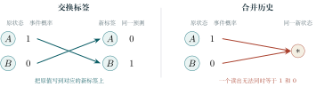
可逆换坐标。 若 且 在相关状态上可逆，旧读出 改用 即可。在线切换还要把当前记忆改为 ，使新递推满足 。技能须在每个可能走到的原始步搬移启动指示、动作分布与停止概率，连同它另存的执行记忆一起保持行为。若旧技能终点核为 ，则新坐标下应读 输入与输出两端都换了坐标。奖励和原始步时长沿同一执行保持原单位。对折扣终点核也作相同的集合变换，对有限期限则保留终点与持续时间的联合信息。第 21 章中技能备份所需的量
合并与细化。 仍看上次服务站不同的两段路口历史。如果固定路线前往 A，抵达时的奖励事件在两段历史上的概率分别为 和 ，交换两种状态的名字，只需交换读出。若两种来路合并，一个数就无法同时表达两个概率。两类来路各占一半时，平方损失最小的共同答案是 ，均方误差仍有 。一项在两处都朝 A 行驶、都在到 A 时停止的技能仍能执行，该技能能否领取奖励的模型却失去了一项区别。反过来，若新表示细分旧状态，有投影 满足 ，任何旧读出都可写成 。一个只按旧来路混合比例拟合的均值，复制后仍然只是旧均值。特别是旧终点核只给粗区域的总概率，细区域各占多少一般要靠带有新终点编码的真实执行再估计。
在一般的合并中，旧模型有时仍能用于新规划。设新状态 并入若干旧状态，把旧终点概率相加便得到落在新区域 的概率 。要使它成为新起点 上的一个模型，该概率须对所有合并的起点一致，对每个新区域都成立。规划还要保住其备份使用的段内奖励、时长等量。这样即使无法回答停在哪个旧细位置，仍可以回答新规划所需的终点问题。Wan 等，§5 的平均奖励技能模型
在实际使用处辨别差异。 保留预算允许的一组起始历史或可重算的短序列，在相同初始化下运行两版编码器。固定目标策略，先在它实际有覆盖的起点比较旧头、迁移的头和固定新编码后重新拟合的头，再用留出的完整回报核对。新头恢复精度，说明这些来路上的信息仍可读出。若同一新状态中的两类历史，在同一行为下反复给出不同的条件均值，应恢复能区分来路的记忆或改变预测的使用范围。有限数据或读出优化失败本身无法证明信息已经丢失。
检验技能时，沿启动和执行中的历史分别比较资格、动作分布与停止概率，再用实际完成的奖励和时长、用新编码表示的终止状态检验模型。若内部策略已变，应重估新行为的后果。若只是较少使用某项技能，应先查它的访问与调用次数。有新编码可用的旧序列可以重新编码，仅凭旧终点编号无法恢复压缩时丢失的信息。对于后续从未执行的来路或技能，仍需取得相应经验。
延伸：目标族、精度要求、信念更新与预测头适配
用一个智能体状态回答多个问题时，先规定要保留哪些区别。设 是对一段有限历史的有界评分， 是现在执行的动作， 是随后按共同规则行动的策略。从两段可达历史分别执行同一动作，延续 步，可比较 是从这次行动开始产生的动作与反馈序列， 表示首尾相接。比较时固定同一延续规则，例如只按分支以后观察到的信号行动。若两段历史对所选目标、期限、动作和后续策略都给出相同答案，合并它们就保留了这些预测。加入新的截止时间、风险事件或未来目标，会增加必须相等的条件。对需要逐步更新的状态，还须检验新反馈能否在合并后的状态上递推。近似信息状态 · 价值等价模型
这给状态学习提供了一个可检验的精度要求。设目标和延续策略固定，每个可行动作的估值误差至多 。这时按估值选出的动作在这一次比较中至多损失 ，因为真实最优动作可能低估了 ，选中的动作可能高估了 。两项真实动作价值相差超过 时，二者的先后次序一定保留。沿行为策略取平均的预测误差很小，仍容许罕见而重要的动作有很大误差。多步反复重选还需另行分析误差传播。技能规划中的动作间隔
这个判据解释了目标改变后的知识复用。若多项奖励是同一组特征的线性组合，固定策略的后继特征可供多种权重共用。若新目标是在给定时限内首次成功，则需在状态中保留进度与剩余时间，在指定行为下预测首次到达。仅保存各特征的期望累计次数，一般恢复不了事件的先后次序。后继特征与策略迁移 · 技能的联合后果
目标族还能反过来约束世界模型。在有限表格环境里，设动作的后继概率为向量 。一项已知的后继测试函数 给出的期望是 ；若多项测试连同常函数张成全部后继状态函数，它们的答案就能唯一确定 。只维持一项价值预测时，一般有许多相容的模型。Richens 等在可观测、平稳、可通信等条件下证明，能够胜任一族多步组合目标的策略，其动作选择本身已足以提取近似的转移模型。有限行动者应为哪些新目标预留这些区别，仍取决于未来的评价。目标与隐含的世界模型 · 由多个动作价值反推模型
联合反馈核下的信念更新
若反馈还依赖前态，如奖励表示是否跨过一条边，使用第 18 章的联合核 ，对前态求和后归一化。
实际学习状态常只优化有限组预测。写 ，一个可能的目标为 。预测问题决定表示必须保留哪些区别。若两个历史对所有已选目标相同、对某个尚未提出的控制问题不同，该损失没有理由区分它们。更低的损失因而不能单独说明表示对所有未来任务都充分。
表示变换与预测头适配
为了单独观察表示改变的作用，暂不改变环境、策略和预测目标。设两状态的特征为 ，线性读出 ，预测分别为 1 和 −1。将两个特征同时旋转： 如果保留旧读出参数，预测会变成 −1 和 −1。没有丢失任何状态信息： 是可逆矩阵。问题在于旧权重与新表示不再相配。由于这里的 正交，若同时取 ，便有 一般可逆矩阵需要 ，不能对权重随意作相同的变换。最简单的缩放例子是 ：原来的线性预测 要保持不变，就需要 。
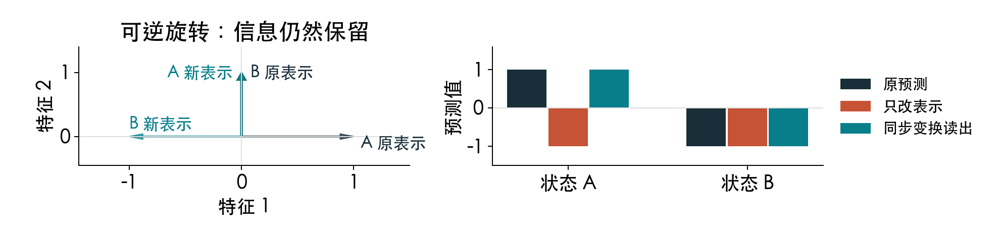
这个例子把信息损失、当前参数失配和表达能力三件事分开。冻结新表示后重新学习预测头，可以检查它是否仍包含所需信息；若只有增加历史信息才恢复预测，才指向原状态的信息不足。深度表示更新一般没有这样已知、可逆的变换。在共享表示上同时学习价值、GVF 和模型时，一次表示梯度可能影响所有已有预测头；检查这些影响，才能判断误差上升来自新知识不足还是表示改变。
资格迹和元敏感度保存的是参数更新需要的历史依赖。除非算法把它们输入动作选择，它们不会自动消除当前决策的状态混淆。供行动的状态摘要、用于预测的参数和用于更新的记忆，需要按用途分别定义。
本章小结课件
本章的五种办法可以排在一条轴上，轴的方向是设计者给多少：从上往下，设计者依次撤去模型、问题与结构，把它们交给误差与检验（本课的整理）。最上面给完整模型，PSR 的坐标由条件概率直接算出，仓库里 处是 与 ，不需要学。撤掉模型、只给问题，是 TD 网络与 GVF：设计者说预测什么，误差替设计者算答案，仓库里一次误差是 ；四区仓库也属于这一格，把灯下 是否高价这个问题放进状态，达到上限的 。再撤掉问题、只给损失，是误差乘敏感度：预测误差把 从 推到 ，长期停在 ，风险 ；控制误差把 推到 。再撤掉结构，连递推里有哪些槽都不给，梯度就到不了，只能先提出候选、再检验、留下有用的；候选记忆槽把风险从 降到 。列式构造网络跨两层：新列由生成器提出，列内的权重用梯度学，学成后冻结。上层三种办法共用一个更新形式，误差乘读出对 的梯度再乘敏感度 ，只差在误差从哪里来：PSR 的误差为零，因为模型已经给了答案；TD 网络的误差来自设计者给的问题；端到端的误差来自损失或回报。下层共用提出、检验、留存三步。下表把各办法的要求与本章的数并排列出。
| 方法 | 怎样得到 | 需要什么 | 局限 | 本章的数 |
|---|---|---|---|---|
| 线性 PSR（算法 20.1） | 由模型搜核心测试，按条件概率递推 | 已知 | 无模型时无从搜索 | 处 ； |
| TD 网络（算法 20.2） | 每个坐标向下一步观测或预测靠拢 | 问题网络；两种动作都执行 | 误差只改本节点，不教递推怎样写入 | 误差 |
| 预测误差加敏感度（算法 20.3） | 标签；沿历史的 | 截断丢掉早先的使用（两步走廊时减半）；完整 超出 ；在线旧状态有偏差 | ；停在 ，风险 | |
| 控制误差加敏感度 | 策略读 （） | 只约束 ；方差大 | 样本梯度 ； 与 同为 | |
| 候选记忆（生成与检验） | 加入新分量 ，在新行程上比较 | 两组都有覆盖 | 候选靠提出，梯度到不了 |
第三、四行共用同一个 ；两种误差的梯度点积可正可负，在 处为 。最容易混淆的也是这两行：同一编码器、同一敏感度，乘的数不同，停的位置就不同（20.4 节）。
预测误差训练 与控制误差训练 。 两者经同一个敏感度 回到 ，只是乘的数不同。前者把 校准到使 处报出真实条件概率 的 ；后者只要求学习器更可能选中正确的路， 只依赖乘积 ， 与 对它没有区别，且 处处成立。回报更高不等于状态更准。
仓库主例： 的指示以 的概率正确； 在 写入 ，其余时刻乘 ；读出 ；选路与真实一侧相符得 ，不符得 ，。
- 在 处见到亮左的概率为 ，见到亮左且随后测试 （向左能到 ）成功的概率为 。新坐标 是多少？为什么不把 归一化？答要点： 。分子是联合概率，分母是当前反馈的概率，算出的就是指示正确的概率。不同测试可同时成功，坐标之和不必为一。
- ，，亮右、向左到 （）。写出 、梯度与新 。答要点： ，，梯度 ，。误差与敏感度同时换号。
- 为什么期望梯度在 为零？此时的平方风险是多少？答要点： ；指示正确的样本推高 ，错误的样本拉低它，在 处相抵； 处报 ，风险 。
- 只用控制误差训练 （）， 会停在 吗？答要点： 不会。， 处处成立； 与 的 同为 。
- 时，预测梯度与控制梯度的点积是正是负？ 时呢？答要点： 时 、，点积为正； 时 ，点积 。在 以下两种误差都要求 增大，越过 后预测要求减小、控制要求增大。
- 候选记忆表中， 与 各由什么省下？仓库换成向左直到到站这段走法后合并指示多付多少？答要点： 只需重估常数； 须区分指示。走法：直到到站时 ，向左一步时为 ；这里的 与候选表里的 是同一个量，即记住指示省下的风险。同一表示是否够用，还取决于执行哪一版固定行为（第 21 章称技能）。
本章各节。 本章撤去了状态递推由设计者写定这一条件，问题写成一个式子 ：读出给定，误差经敏感度 回到 。预测误差教递推记什么；控制误差只看乘积，会与它冲突；递推里缺的分量要靠提出与检验。
- 20.1 模型已知时，核心测试的预测就是状态：所有预测是它的线性函数，且按条件概率递推（算法 20.1）。
- 20.2 模型未知时，TD 网络用下一步的观测或预测训练各坐标（算法 20.2）；误差只改本节点。
- 20.3 敏感度 把预测误差送回每次递推；仓库上 由 到 ，长期停在 ，此时 处报出的 就是指示的可靠度（算法 20.3）；截断时梯度可减半，完整计算放不进 。
- 20.4 控制误差走同一条路，只约束 ，所以替代不了预测误差；两种梯度在 时相互抵触。两种部分办法里，加权合并的 6000 步累计回报比分开参数多约 ，一般情形没有解决。指示反转后，学 的几种办法几百步内恢复，固定 在后 步内只回到每步约 （一位记忆的简单世界）。
- 20.5 递推里没有的那一位，梯度到不了：先提出候选记忆，再用新数据检验。
- 20.6 两段历史并成一个状态，凡要用到的读出须答得一样；充分与否还取决于执行的固定行为：换成向左直到到站这段走法，合并指示多付 。
五种办法各给什么、由数据定什么，见本节开头的方法表；把预测放进状态的实验见 20.5 节的四区仓库。
与前几章的关系。 第 18 章定义过状态对一组读出充分：给定状态，经历的其余部分对这些读出不再提供信息（18.3 节）。学出的 若对控制充分，即每个动作下奖励均值与下一个 的分布只依赖 ，第 1–12 章在 MDP 上的方法可以在 上照用；只对几项读出充分不够。把全部测试的预测都当读出时，充分就是 PSR 的马尔可夫性。 还在学的时候，同一段经历映到的 每一步都在变，价值和策略面对的过程本身在变，这是持续学习里状态学习的一个基本困难。证据方面，仓库上指示不变时，学 与直接给固定记忆的累计回报相差不过三百；指示反转后，学 的几种办法几百步内恢复，固定记忆在后 步内只回到每步约 （20.4 节）；把预测放进状态再加乐观，最后 的回报达到上限的 （四区仓库）。世界丙里走廊变长以后，几种学 的办法都只记住一部分（世界丙）。与第 18 章的区别在写入：第 18 章的递推由设计者写定，只在意外处写入一位（18.6 节）；本章的 从误差中学出，写入多少由误差决定。
留下的问题。 20.6 节看到，换一种多步走法，状态够不够用就变了；多步走法本身还没有定义。本章学出了状态，决策却仍是一步一个：每一步都从 重新选一个原始动作，即使沿走廊走到 这样的多步行为反复出现。能否把一段多步行为当作一次选择，并在本章学出的状态上定义它的启动、执行与停止？第 21 章撤去“一步一个决策”这一条件。该预测哪些问题、由谁来定，留给第 23 章。此外，候选记忆靠提出而非梯度，提出哪些候选、保留多少，仍取决于未来的任务机会；有限容量下的取舍准则留给第 25 章的发现效用。
开放问题课件
学习器自己提出特征或预测问题时，怎样评价一个特征，现有做法差在哪里，怎样的世界能把它们分开？这部分的逻辑还很初期，下面从定义出发重想一遍。
研究问题：坐标与梯度
这一节和下一节按四层整理本章留下的研究问题：已经解决了什么、在什么条件下成立；已有工作各解决了哪一部分、依赖什么假设；还缺什么、难在哪里；怎样检验。这一节对应 20.1 到 20.3 节。
已解决的部分。 隐藏状态有限时，预测矩阵的秩至多是隐藏状态数 ，一组线性独立的核心测试决定所有测试的概率。模型已知时，20.1 节的算法能搜出这组测试。
已有工作。 Littman、Sutton 与 Singh（2001）提出线性 PSR；Singh、James 与 Rudary（2004）给出系统的理论。模型未知时，谱方法用测试与历史的协方差矩阵估一组坐标；Boots、Siddiqi 与 Gordon（2011）在秩条件成立、行为覆盖足够的假设下证明估计一致。
缺什么。 秩是模型的性质，有限数据下能否分出两列是另一回事。两行取 与 时行列式是 ；每行各试 次，两行之差的标准误约 。 比它小，经验数据就分不出第二个方向。动作又由学习器自己选：一个测试越稀有，估它要花的交互步越多，而这些步也算在 lifetime 回报里。
怎样检验。 操控 与稀有动作的概率。比较三种选测试的准则：按奇异值、按下一观测误差、按后续动作价值。在没用于挑选的轨迹上量校准误差与净控制回报；重复单位是独立运行。
已解决的部分。 单项 GVF 在第 19 章的条件下有唯一解。许多线性节点互为目标时，可以堆成 ： 可逆则解唯一； 的谱半径小于一时，同步迭代对任意初值收敛；依赖图无环时可以逐项求解。
已有工作。 Sutton 与 Tanner（2004）提出 TD 网络，把问题网络与回答网络分开；Schlegel 等（2021）把状态写成一组 GVF 预测，讨论问题的选法。这些工作都假设问题集合已经给定。
缺什么。 逐个检查每项预测的延续系数，不能保证整组有解。学习器在线加入新预测时，依赖图随之改变，原来无环的图可能出现环。20.2 节的循环世界是一步 TD 网络卡住的例子。
怎样检验。 单状态两节点，，，解为 。 时解是 ； 时两式矛盾，无解； 时解唯一，但 的谱半径是 ，直接迭代发散。把这三组与用观测锚定的无环两节点对照，量迭代误差随步数的变化。
已解决的部分。 实时递归学习（RTRL）给出精确的往前带，要存 个数（Williams 与 Zipser，1989）。
已有工作。 UORO 用两个向量的随机外积近似这张表，期望无偏，只存 个数，代价是方差大（Tallec 与 Ollivier，2018）。稀疏近似只保留一部分项（Menick 等，2021）。列式构造网络（Javed 等，2023）与 RTU（Elelimy 等，2024）限制结构，使精确敏感度能按单元算。
缺什么。 这些结果都在固定参数、固定输入轨迹上讲导数。闭环里，行动、后续输入与参数都随过去的更新改变；梯度均值正确，不保证 lifetime 回报更高。截断的偏差与随机近似的方差，还没有在同一计算预算下一起量过。
怎样检验。 走廊里 ，完整导数是 ；只回到最近 步（）得 。先固定输入，重复随机近似，比较均值、方差与内存；再让策略改变以后的走廊长度，在相同的每步计算下比较主回报。重复单位是独立运行。
研究问题：干扰、结构与非平稳
这一节对应 20.4、20.5 节，再加全章共有的一个问题。
已解决的部分。 步长 很小、损失局部光滑时，沿第 项负梯度走一步，第 项损失的变化约为 。
已有工作。 Yu 等（2020）用这个点积定义多任务的梯度冲突，把冲突分量投影掉。Jaderberg 等（2017）让辅助预测任务与控制共用编码器，帮主任务学表示。
缺什么。 同一个函数可以有不同的参数坐标。取 ，在 坐标下的点积是 ，符号可以改变；用预条件 更新时，应看 。仓库里 只有一维，正的重标度不改符号，20.4 节的结论不受影响。点积还只管一步，不预言长期控制损失。
怎样检验。 两梯度取 与 ，点积是 ；用 表示同一函数后，点积是 。在同一批旧轨迹上，比较两种坐标各走一步后的真实预测损失与动作概率；再在闭环里检验多步的结论。
已解决的部分。 在线性读出上，生成与检验在固定数目的槽里持续换掉效用低的特征，学习保持稳定（Mahmood 与 Sutton，2013）。
已有工作。 Dohare 等（2024）在若干监督与强化学习任务上观察到，长期训练后网络学新东西的能力下降；持续反向传播按效用重置少数单元，在这些任务上缓解了这一点。Lyle、Rowland 与 Dabney（2022）把类似现象叫容量损失。
缺什么。 在单条经验流里，将来工况重现的频率未知。使用度低可能表示无关，也可能只是稀有；换掉它可能恢复可塑性，也可能抹掉稀有记忆。最好的替换率还没有一般的理论。
怎样检验。 两种工况轮换，旧工况以 的概率出现一条影响交货的线索。固定总槽数、学习步数与初始化，比较固定特征、等率随机替换与按使用度替换。量四样：新工况前 步的超额损失、旧工况复现后的首次表现、稀有分组的误差、全程回报。重复单位是独立的 lifetime。
已解决的部分。 快慢两组参数的步长比趋于零、各自满足随机逼近的步长条件时，双时间尺度随机逼近收敛，慢变量看到的是快变量的平衡点（Borkar，1997）。 固定且 对控制充分时，第 1–12 章的方法可在 上照用。
已有工作。 Kapturowski 等（2019）在循环网络的经验回放里遇到旧状态过时的问题，用存下的状态加一段预热来缓解。Subramanian 等（2022）给出近似信息状态的定义，说明怎样的压缩足以做近似最优控制。
缺什么。 本章的 与读出用相近的步长同时学，同一段历史映到的 一直在变， 上的过程不是固定的 MDP。存进回放的旧 也会过时。两个时间尺度分不开时，还没有收敛保证。
怎样检验。 操控 与读出的步长比；比较存旧 与按新 重算两种做法；量读出误差、全程回报与每步计算。重复单位是独立运行。
一个特征值多少
要自己提出的理由。 世界比学习器大（大世界假设，Javed 与 Sutton 2024，见 15.md），能留的特征和问题只有有限几个。梯度只能调已有的位，递推里没有的那一位，两段历史并成一个状态，梯度分不开，20.5 节第一页的不写入学习器每步一直约 .63。世界还会变，今天有用的位明天可能没用。所以学习器必须自己提出新位，并决定留哪几个。
价值的定义。 设槽位为 个。特征 在时刻 的价值写成 其中 是从时刻 到 lifetime 末 的累计回报，正文的 就是 。字母用 ，免得和价值函数 混淆。式子只有边际贡献与代价两项，读它要分四点。
- 眼下：在其余特征都在时， 改变了多少选择、多得多少回报。
- 以后：世界变了以后，有 的学习器恢复得多快。这一点不另成一项，已经含在 里。本章学 的学习器在指示反转后 232–608 步回到每步 .9，固定 三千步内只回到每步约 （20.4 节），就是一个例子。
- 代价： 只记每步的额外计算。占槽的机会成本已由最好的替代者一项计入；检验所花的经验步（20.5 节的查询步）已含在 里，不重复记。
- 在线估：这一点是对估计方法的要求，式子里没有对应的项。只用一条经验流，在需要作决定之前，要能把 的符号估对。
评价必须满足的六条。 前四条由上面的价值式推出，可分辨与留出两条来自检验的统计要求；六条是本课的整理。
| 条件 | 要求 | 本课的例子 |
|---|---|---|
| 反事实 | 量有它与没它的差，不量误差或权重大小 | 下一步到 这一问题误差为 0，用处也为 0（19.6 节） |
| 条件化 | 在当前特征集合下量边际值 | 两项同带一位信息时代理各自减半（19.6 节）；只有组合才有用的特征，单独量都是 0 |
| 看未来 | 把恢复速度算进去，至少报告它 | 固定与学习 的差主要在反转以后；恢复速度要等世界真的变了才量得到，事先无法估，所以这一条比其余几条弱，只要求报告 |
| 记账 | 检验用掉的步已反映在 中，计算记入 ，只扣一次 | 20.5 节的查询步 |
| 可分辨 | 事先按 定配对 lifetime 数；，前者对应双侧显著性水平 ，后者对应检验功效 .8 | 第 24 章 |
| 留出 | 选定与检验用不同的数据段，门槛事先写定 | 20.5 节的两阶段流程 |
本课各章用过的评价办法，意外触发、学习进度、按使用度替换、生成与测试等，没有一种六条都满足。
不同意见 有人认为这个定义太理想：最好的替代者本身要搜索才知道，这个式子在线永远算不出来，只能当作评价代理时的参照。也有人认为特征的价值不能逐个定义：一组特征一起才有用时，把价值分给每一个，结果取决于分法，合作博弈论里的 Shapley 值就是一种分法。本课用这个式子，是因为它把误差小、使用度高这类代理和实际要的东西分开写了出来。
现有做法回避了什么
下面把现有做法逐一放到价值式前面，看各自回避了哪一部分。十一种做法分成两组，这样分是本课的整理。
局部读数。 前五种拿手边的一个局部读数（误差、进度、使用度、贡献、步长）代替特征的边际 。
| 做法 | 回避了什么 | 会在哪里失败 |
|---|---|---|
| 意外触发（第 19 章） | 假定缺的信息就在误差附近（回看 1–4 步） | 奖励带噪时到处触发；线索离误差远时找不到；误差消失后不再提，看不见只对将来有用的问题 |
| 学习进度（Schmidhuber 1991；Oudeyer 等 2007） | 用处 | 学会后有用问题的进度也归零（嘈杂电视）；作外层准则时留下空子，每步外部回报 .041（第 23 章） |
| 按使用度替换（Rafiee 等 2023，算法 19.3） | 将来与反事实 | 同权连到所有动作的特征不改变任何分差，使用度却可很高（19.md 算法 19.3 后一段）；新候选要等 300 步 |
| 生成与测试（Mahmood 与 Sutton 2013；持续反向传播，Dohare 等 2024；Elsayed 与 Mahmood 2024） | 生成的方向；稀有但关键的特征 | 只在 红灯前激活的单元，期望贡献 .01，换掉后红灯处读出立刻少 1（23.md）；只处理前馈特征，不处理递推的记忆位 |
| IDBD（Sutton 1992） | 生成 | 只给已有特征分步长，步长可作相关度读数，但不添新位 |
这五种读数都在一步之内、就着一个特征算出来，所以便宜，可以在线每步更新；也正因如此，它们看不见将来才显出的用处，也看不见几个特征合在一起才有的用处。
不同意见 有人认为在严格流式、每步 的预算下，只有这类局部读数算得起，指出它们看不见将来并不构成替代方案。回应是，可以只给少数候选付更贵的检验，下面方向表里的影子读出就是这样的折中。
结构与训练。 后六种没有用局部读数，把状态里缺什么交给预先给定的东西。这些东西是给定的展开长度、问题、递推形式、实验者指定的子问题、辅助任务或元训练分布；它们回避了新的一位从哪来。
| 做法 | 回避了什么 | 会在哪里失败 |
|---|---|---|
| 元梯度提问（Veeriah 等 2019） | 离散结构与长期效应 | 只看有限几步展开；连续参数加不出新的一位 |
| GVF 网络（Schlegel 等 2021） | 问题从哪来 | 问题选错，状态就丢掉区别；选了尺度失衡的问题，预测变差（20.2 节） |
| 学 （本章） | 结构 | 只调一个已有标量；控制误差只约束 |
| STOMP（Sutton 等 2023，Reward-Respecting Subtasks） | 子问题从哪来 | 子问题由实验者指定（第 21 章） |
| 辅助任务（Jaderberg 等 2017，UNREAL） | 逐项的边际值 | 只报整体增益，说不出哪一项值得留 |
| 端到端元训练（Duan 等 2016；Wang 等 2016） | 可检验性 | 学到什么取决于元训练分布；无法逐项检验或替换 |
两组合起来，共同的毛病有四条：用局部代理代替边际 ；孤立地量单个特征；只看眼下；不记代价。
不同意见 有人认为这些表对代理太苛刻。每种代理都是在算力和数据有限时不得不作的近似，在它设计时针对的问题上都有效；指出它在别处会失败，并不说明它不好。也有人认为端到端元训练的不可检验这一性质不是缺点：只要元训练分布覆盖了要面对的变化，逐项检验就没有必要。本课列出的，是这些做法在大世界里、一条经验流上会碰到的问题。
可以研究的方向
四条毛病各引出至少一个方向。五个方向与它们的预言都是本课的整理，不出自某一篇文献，也都还没有成熟的算法；每一条都写成实验能推翻的预言，能推翻才算一个研究问题，也都还要在下一小节世界丙那样的环境里检验。预言里的量是待检验的设定，不是数据。前两个方向直接回应用局部代理代替边际 和不记代价，后三个分别回应只量报得准、只看眼下、孤立地量单个特征。
| 方向 | 要解的问题 | 可证伪的预言 | 本课现状 |
|---|---|---|---|
| 回本账：给每个特征记一本账，累计边际贡献减去占槽与计算的租金，余额为负才让位 | 不记代价；代理误删稀有而关键的特征 | 含 关键线索的世界里，按账替换留住线索的比例高于按使用度替换， 不低于后者 | 世界丙试过一种实现（两槽替换） |
| 影子读出：为每个候选维护一个去掉它的读出头，同一轨迹上比两头的预测 | 用局部代理代替边际 | 符号判对率过 所需的决策次数与 成正比，且早于要作替换决定的时刻 | 未测 |
| 决策价值×成本：只计会翻转选择的那部分信息，再除以计算成本 | 只量报得准；时钟一类可预测而无关的特征占槽 | 有这类干扰特征时，联合排序的 高于按风险降幅排序；无干扰时两者持平 | 未测 |
| 沉睡特征的期权价值：眼下用处约为零、但历史上与回报相关的特征，降租而不删 | 只看眼下；世界周期变化时反复重新发现 | 存在变化间隔 ：世界变得比它勤时保留的 更高，比它慢时与按眼下用处替换持平 | 未测 |
| 组合生成：把已留的特征两两组合（与、异或、延迟）作新候选，按后代的账给各条生成规则分配提出频率 | 孤立地量单个特征 | 有用特征是两条线索的异或时，单项生成与检验接近无辅助，组合生成接近上限，即直接把异或特征给学习器时的 | 未测 |
表中 是两个读出逐次回报之差（配对差）的标准差， 是想分辨的真实差，记号与第 24 章相同；这一正比关系来自那里的正态近似样本量公式，所需对数约为 。
回本账针对不记代价，也针对按平均贡献排序会误删稀有而关键的特征。例如一个单元只在概率 的红灯前激活，期望贡献只有 ；换掉它以后，红灯处的读出立刻少 。本课在世界丙里试过一种实现，结果是在指示翻转后把指示赶走（见两槽替换）；那只是一种实现，不足以否定这一类做法。不同意见：有人认为租金怎样定本身又是一个要调的数，定高了关键线索也付不起，定低了等于不替换；也有人指出账上的边际贡献要估得准，离不开影子读出，两条其实是一件事的两半。
影子读出在同一数据上比较两个读出头的预测；回报上的差不能从一条轨迹直接读出，要靠分支、配对运行或离策略评价。它针对用局部代理代替边际 ：配对 lifetime 只能事后估，在线拿不到。不同意见：每个候选一个影子头，代价随候选数线性增长，放不进第 17 章每步 的预算；回应是只给正在检验期的少数候选开影子头，代价由检验名额决定。另有人担心控制上的差要靠离策略评价，方差可能大到判对率迟迟过不了 ；那时预言就不成立；所以这条预言可以检验。
决策价值×成本针对 20.5 节的风险降幅只量报得更准，也针对时钟一类可以预测得很准、与回报无关的特征占槽。不同意见：会不会翻转选择这一点取决于当前策略。策略还在学的时候，眼下不翻转选择的特征将来可能翻转，按这个准则会把它删掉。这与下一条的考虑正好相反，两条要一起检验。这一条可以对照作者提出的系统 3（学习调节思考与学习）：按会不会翻转选择、花多少计算给特征排序，是在调节学什么与算多少；这里只当研究方向，不当已有结论。
沉睡特征的期权价值针对只看眼下：世界周期变化时，删掉的特征要反复重新发现。不同意见：有人认为降租不删等于变相扩容，时间一长沉睡特征会占满槽位；也有人指出 只在世界周期变化时有清楚的含义，变化不规则时无从事先估计，只能事后看。
组合生成针对孤立地量单个特征：只有组合才有用的特征，单项检验永远看不见。第 19 章世界乙的组合提出，是同一想法在预测问题上的一次试验。不同意见：两两组合的候选数随特征数的平方增长，检验名额跟不上；按后代的账分配频率可以收窄，但账本身要时间积累。
“本课现状”一栏只写已经做过的：只有回本账在世界丙按一种实现测过，其余四条都没有测。
不同意见 有人认为这些方向都把特征当成离散的槽，端到端的循环网络里特征却是连续、彼此纠缠的，逐项记账无从下手；按这种看法，研究应转向怎样让端到端学习在世界变化后恢复得快。另一种看法是，正因为端到端无法逐项检验，才需要可以记账的离散结构，两者可以在只有组合才有用的环境里配对比较。下一小节的世界丙，是把这些问题放到一个可控环境里检验的第一步。
世界丙：走廊变长，指示会翻课件
这一小节问：怎样的世界能把固定记忆与学习记忆分开。下面是初步观察：只试了一种编码器，记忆是一个乘性标量，结论只对这一类成立。
现有世界分不开的原因。 本章的仓库只缺一位，编码器只有一个标量，任何 都能支持最优选路，所以世界不变时学 本来没有可多得的东西。指示不变的 6000 步里，固定 得 5796，三种学 的办法得 5513–5757，这个世界分不开它们。
设定。 本课设计的世界，已按下文的次数跑完。指示写进记忆后，要走 步走廊才到 ，每走一步记忆变为 ，写入噪声 的标准差为 .1，到 时指示只剩 倍。指示的可靠度每 步在 .8 与 .2 之间翻一次，翻了以后原来的读法要反过来。比较五种学习器：固定 、固定 、分开参数、加权合并、端到端，每种 100 次独立运行，各跑 30000 步。程序先按本章的设定核对了固定与学习的数。、指示只翻一次时，五个学习器相差都不到 40：反转后端到端 2722 对 2758，其余都在 12 以内。差别来自两个程序取随机数的方式不同。
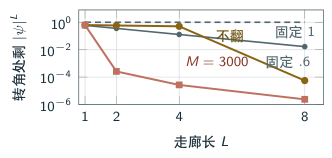
学出的 也会随 变。 为 1、2、4 且指示不翻时，加权合并学出的 在 .6 到 .85 之间，转角处剩下的比例与固定 相近； 时 只有 .29，八次方只剩十万分之五左右。指示会翻时，从 起 就落到 .01 到 .2 之间，剩下的比例更小。这里由各格的平均 先平均再取次方，只给出量级。
学 何时多得。 下表是加权合并减固定 的 30000 步全程回报，每格 100 次运行，95% 区间半宽都不超过 90。
| 1000 | 3000 | 不翻 | |||
|---|---|---|---|---|---|
| 1 | 5728 | 7621 | 8838 | 6097 | |
| 2 | 1687 | 2561 | 1715 | ||
| 4 | 172 | 317 | |||
| 8 |
走廊只有一步时， 可以直接翻号，跟着指示一起翻，学 多得的回报更多； 时九次翻转共多 8838，每次约 980。指示不翻时固定 多 338，与本章一致。走廊长两步以上，情况变了： 时学 只在 为 1000 到 之间多得，多 1600 到 2500，翻得太勤或不翻都是固定 好； 时只有 为 3000 和 两格为正，172 和 317，其余为负； 时整行为负，不翻时少 2679。所以能确定的只是两端：走廊一步、指示会翻时学 多得； 时各种翻转频率下固定 都更好。中间两行正负相间。
原因在 。 为偶数时， 翻号不改变 ，指示翻了只能靠读出的权重翻； 为奇数时， 要从正走到负，必须穿过零附近，那里的梯度正比于 ，几乎为零。学习器在翻转的压力下把 往零推，推下去就回不来。 时学出的 停在 .2 到 .5 之间，八次方至多千分之四，几乎不剩指示。指示会翻时，分开参数、加权合并、端到端三种学 的学习器回报都约 6815，与记忆里不剩指示时相当。指示不翻时，三者的 停在 .26 到 .40，回报 6900 到 7000；固定 不衰减，得 9581，多 2600 到 2700。
原先预期 、固定 时信号埋进噪声，世界不变时学 应多得，实测反了。本课试了一个补救： 接近 1 时每个样本的梯度很大，于是把步长缩成 ，从 起学。 不翻时仍比固定 少 348（区间 340 到 356）， 时少 377。按预测误差学， 要校准到约 .6 才最好地预测转角的结果，读出的信号随之变小；预测得准与选路选得好，在这里要的 不同。
对数怎样定。 先跑 10 次预试，最小关心差取上限的 5%，按 算，各格最多需要 15 次，取 100 次（第 24 章）。
不同意见 有人指出这个世界里的困难有一部分来自参数化：用门控的循环单元，学习器可以学会在走廊里原样保持记忆，翻号也可以由门控完成。那时 的影响会小得多；按这种看法，世界丙检验的只是乘性标量这一类编码器，记忆学习的一般情形要另做。另一种看法认为这就是要点。最简单的可学记忆在长走廊上就输给不学，说明让记忆也学这一做法本身要付代价；先要问记忆学的是预测还是控制。
世界丙：槽与预期课件
这一小节看两个槽的替换，以及原先四条预期与实测的对照。核心结论同样是初步观察：回本账只试了本课的一种实现。
槽与替换。 走廊只有一步（），记忆只有两个槽，候选有三种：有用的指示；时钟，它可以预测得很准，但与回报无关；嘈杂电视。每个槽有自己的 ，按预测误差学，也有自己的读出权重。比较三种做法：不替换；按使用度替换，使用度低的槽让位；按回本账替换。各做法的 30000 步全程回报如下。
| 不替换 | 按使用度 | 按回本账 | |
|---|---|---|---|
| 1000 | 26664 | 26662 | 25841 |
| 3000 | 28520 | 28521 | 28050 |
| 29119 | 29120 | 29020 | |
| 不翻 | 29313 | 29313 | 29313 |
按使用度替换在 100 次运行里一次也没有赶走指示，回报与不替换相差不到 2。这里的使用度是读出权重乘读数偏离均值的大小，按 Rafiee 等的做法取滑动平均；指示每趟都随 的位置变，读数一直在变，读出权重也一直大，所以使用度一直高。回本账是本课为第三条预期准备的补救。它事后反事实地算少了这个槽时转角选对的机会少多少，乘 3 记作功劳；每步扣租金 .02，余额封顶 20，余额为负才让位。它反而出了问题。指示翻转后读出权重还没翻过来，这时读指示会选错；少了它反而选得更对，所以反事实功劳为负。余额跌到零下，学习器赶走指示，之后又重新发现它。 为 1000、3000、 时，每次运行平均赶走 1.8、1.1、0.2 次，比按使用度少 821、471、99，区间都不含 0。这一实现里，回本账把现在读反的特征算成了没用的特征。回本账的租金、上限与算法是本课的设计选择，换一种实现结论可能不同。
预期与实测。
- 、指示不翻时应复现本章，固定 不输。成立：29740 对 29402。
- 、世界不变时学 应多得。反了：固定 多 2679；缩小步长后仍多 348。
- 按使用度替换会在指示长期无变化时把它换给时钟。没有出现：0 次。原先担心的读数长期不变在这个世界里不会发生，翻的是指示的可靠度，读数本身每趟都随 的位置变。
- 量级：原先估每次翻转约 190，实测加权合并减端到端在 时九次翻转共差 4552，每次约 506，端到端恢复得比估计的慢。原先估固定 不恢复时每 3000 步差约 1700，实测约 980：指示来回翻，固定 每隔一段又是对的，只在一半的段里吃亏。
不同意见 有人认为回本账的失败是实现细节：功劳按更长的时间窗口平均，或在读出权重翻过来之前暂停记账，就不会赶走指示；本课只试了一种实现，不能据此否定回本账这一类做法。也有人认为使用度从不出错，是因为这里只有两个槽、三种候选；候选一多、槽更紧时，使用度会不会把暂时不用的有用记忆换掉，仍要在更大的世界里检验。
大语言模型里的同类做法课件
大模型上有没有类似的方法？用本章的式子 ，可以把常见做法排一排。大模型多用预测误差学 ，部署后 不再变；各家的差别在 的形态与敏感度传多远。
| 做法 | 对应主线哪一步 | 证据 | 局限 |
|---|---|---|---|
| Transformer（Vaswani 等 2017） | 不学递推： 是窗口内全部缓存 | 注意力可读窗口内全部键值 | 代价随长度增长；窗口外全丢 |
| Transformer-XL（Dai 等 2019） | 上一段的状态缓存进下一段，梯度不穿过缓存：截断的 | 可用的依赖距离比固定窗口长 | 更早处该写什么，学不到 |
| 循环记忆 Transformer（Bulatov 等 2022） | 记忆向量段间递推，梯度穿过多段：较完整的 | 要长记忆的合成任务上胜过上一行 | 展开越长，越费内存 |
| Mamba（Gu 与 Dao 2023） | 保持与写入随输入变，像随输入变的 | 同规模语言建模与 Transformer 相当 | 大小固定，精确回忆吃亏 |
| PPO-ptx（Ouyang 等 2022） | 控制误差里混入预训练的预测误差：加权合并 | 公开基准上的退化变小 | 混合权重靠手调 |
标准 Transformer 不学递推。它把窗口里的全部词元都留着， 就是这份缓存；注意力能读到窗口内全部键值，不必决定记什么。能否取回某项信息仍取决于表示与读出。代价是计算随长度增长，窗口外的一律丢掉。Transformer-XL 把上一段算出的隐状态缓存下来给下一段用，但梯度不穿过缓存。这就是本章说的截断敏感度：误差改不了更早处的写入。循环记忆 Transformer 在段与段之间传几个记忆向量，训练时梯度穿过若干段，相当于把敏感度传得更远，代价是要存下展开的各段。Mamba 这类选择性状态空间模型的递推里，保持多少与写入多少都随输入变，像一个随输入变化的 ； 的大小固定，所以要逐字回忆很长内容时不如 Transformer。InstructGPT 用人类偏好做强化学习时，在 PPO 的梯度里混入预训练的对数似然梯度，叫 PPO-ptx，它用来减小在公开数据集上的退化。这就是本章的加权合并：控制误差和预测误差作用在同一组参数上，用权重折中。这些模型有一个共同的局限： 在预训练后就固定了，部署后的 lifetime 里只靠 适应， 不再随经验更新。本章问的边用边学 ，在大模型上还没有成熟做法。
具身智能体里的同类做法课件
具身智能体这边，同一个式子也排得出来。它们常把预测误差与控制误差分给不同参数，或按权重相加；回放里存的状态还会过期。
| 做法 | 对应主线哪一步 | 证据 | 局限 |
|---|---|---|---|
| Dreamer（Hafner 等 2020） | 观测重建与奖励预测训练 ，控制误差不回传：分开参数 | 像素连续控制上数据效率高 | 要记住与回报无关的细节 |
| UNREAL（Jaderberg 等 2017） | 循环网络上加辅助预测，与控制共享参数：加权合并 | 三维迷宫上学得更快 | 辅助任务与权重靠手选 |
| R2D2（Kapturowski 等 2019） | 回放里的 由旧 算出： 在学时 会过期 | 存状态再预热，成绩提高 | 预热只补一部分 |
| R3M（Nair 等 2022） | 视觉编码器用人类视频预训练后冻结：固定的 | 示教少时胜过从头学 | 部署后不随经验变 |
| 持续反向传播（Dohare 等 2024，Nature） | 按效用重置少用的单元：生成与检验 | 长期训练中保住可塑性 | 效用度量是启发式 |
Dreamer 用循环状态空间模型做状态，训练它的是观测重建与奖励预测的误差；策略和价值在想象出的状态轨迹上学，控制误差不回传到状态模型，这就是本章的分开参数。它在像素输入的连续控制任务上数据效率很高；不同意见是，重建要求状态记住画面里与回报无关的细节。UNREAL 在 A3C 的循环网络上加像素控制、奖励预测等辅助任务，辅助损失和控制损失作用在共享参数上，按权重相加，相当于加权合并；它在三维迷宫任务上学得更快，但辅助任务和权重都由设计者选。R2D2 从回放里取序列训练循环网络，存下来的状态是旧参数算的，和当前参数对不上。这就是与前几章的关系一段说的问题： 在学时，同一段经历映到的 在变。R2D2 用存下的状态起头，再用一段预热重新算状态，成绩提高，但预热只修补一部分。R3M 用人类视频预训练视觉编码器，然后冻结，给机器人做模仿学习，示教少时比从头学好；它对应的是固定的 ，部署后不再随经验更新。持续反向传播在长期训练中按效用重置少用的单元，对应 20.5 节的生成与检验：先提出新单元，再看它有没有用。总的看，具身方面已有的做法覆盖了分开参数、加权合并和状态过期，在部署后的 lifetime 里持续学 的还很少。
回到主线课件
最后回到全章的主线。第 18 章的状态递推由设计者写定；本章把它换成 ， 要从经验中学出。这个式子提出四个问题，由各节回答。第一，要什么样的 ：它要对所需的读出充分，20.1 节的 PSR 说明，模型已知时一组核心测试的预测就是这样的状态；20.6 节给出一般的判据，两段历史并成一个状态时，凡要用到的读出都得答得一样。第二，用什么信号学 ：20.2 节用预测误差，20.4 节加上控制误差；控制误差只看乘积，两者会冲突。第三，信号怎样回到更早的写入：20.3 节的敏感度 把误差送回每次递推，截断时只回到最近 步。第四，递推里根本没有的分量，梯度到不了，20.5 节改为先提出候选记忆，再用数据检验。
还没解决的有三件： 在学的时候， 上的过程本身在变；状态够不够用依赖读出所用的行为，下一章处理；该预测哪些问题由谁来选，留给第 23 章。大模型和具身智能体的做法也落在这条链上：Transformer-XL 的缓存是截断的敏感度，落在第三步；PPO-ptx 与 UNREAL 是加权合并、Dreamer 是分开参数，落在第二步；持续反向传播是生成与检验，落在第四步。章首的“本章的主线”一段立目标与分工，这里对照各节已答与未答。
延伸阅读
- Sutton 与 Barto，《Reinforcement Learning: An Introduction》第 2 版第 17.3 节“Observations and State”：教科书里对观测、智能体状态与预测式状态的简明讨论，可与本章 20.1–20.3 节的记号对照。
- Littman、Sutton 与 Singh，Predictive Representations of State（NeurIPS 2001）：线性 PSR 的原始论文，20.1 节的核心测试搜索、条件概率递推与维数不超过隐藏状态数都出自这里。
- Sutton 与 Tanner，Temporal-Difference Networks（NeurIPS 2004）；Tanner 与 Sutton（ICML 2005）：前者把问题网络与回答网络分开，后者加上迹并在循环世界上比较，是 20.2 节算法 20.2 与循环世界原型的出处。
- Schlegel 等，General Value Function Networks（JAIR 2021）：把状态写成一组 GVF 预测，并讨论问题怎样选会保留或丢掉区别，对应 20.2 节的证据小节与开放问题里“问题从哪来”一行。
- Javed、Shah、Sutton 与 White，Scalable Real-Time Recurrent Learning Using Columnar-Constructive Networks（JMLR 24，2023）：在结构上限制连接，使完整敏感度可以往前带，是 20.3 节列式构造网络的原文。
- Mahmood 与 Sutton，Representation Search through Generate and Test（AAAI 2013 Workshop）：位子数固定、按效用替换特征的最简单循环，读它可以看清 20.5 节先提出、再检验的做法在监督学习里是什么样子。
- Dohare 等，Loss of Plasticity in Deep Continual Learning（Nature，2024）：深网络在长期训练中失去可塑性，以及按效用重置单元的持续反向传播，与 20.5 节两步走廊的驻点属于同一类现象。
- Jaderberg 等，Reinforcement Learning with Unsupervised Auxiliary Tasks（ICLR 2017）：辅助预测任务与控制共用一个编码器的代表做法，可对照 20.3、20.4 节两种误差回到同一个 的分析。- Singh、James 与 Rudary，Predictive State Representations: A New Theory for Modeling Dynamical Systems（UAI 2004）：给出 PSR 的系统理论；它假设模型已知，有限数据下怎样选测试没有回答。
- Boots、Siddiqi 与 Gordon，Closing the Learning-Planning Loop with Predictive State Representations（IJRR，2011）：用谱方法从数据估 PSR，在秩条件与充分探索下一致；学习器自己选动作时的探索代价没有处理。
- Williams 与 Zipser，A Learning Algorithm for Continually Running Fully Recurrent Neural Networks（Neural Computation，1989）：实时递归学习，精确地往前带敏感度；内存是状态维数乘参数维数。
- Tallec 与 Ollivier，Unbiased Online Recurrent Optimization（ICLR 2018）：用随机秩一外积近似敏感度表，期望无偏、内存小；方差大，闭环回报上的效果没有保证。
- Menick 等，Practical Real Time Recurrent Learning with a Sparse Approximation（ICLR 2021）：只保留敏感度表的稀疏部分，降低计算；丢掉的项带来的偏差要按任务检查。
- Elelimy、White、Bowling 与 White，Real-Time Recurrent Learning using Trace Units in Reinforcement Learning（NeurIPS 2024）：提出循环迹单元（RTU），复数对角递推使精确 RTRL 的计算随隐状态维数线性增长，在若干部分可观测任务上用于强化学习；线性递推时复数对角与稠密线性递推表示等价，非线性 RTU 不再等价，表达能力的损失仍要量。
- Yu 等，Gradient Surgery for Multi-Task Learning（NeurIPS 2020）：用梯度点积定义任务冲突并投影掉冲突分量；点积随参数坐标变，只管一步。
- Lyle、Rowland 与 Dabney，Understanding and Preventing Capacity Loss in Reinforcement Learning（ICLR 2022）：描述强化学习中的容量损失并给出正则做法；稀有但有用的特征怎样保住没有回答。
- Borkar，Stochastic Approximation with Two Time Scales（Systems & Control Letters，1997）：快慢两组参数步长分开时的收敛结果；本章 与读出步长相近时不适用。
- Kapturowski 等，Recurrent Experience Replay in Distributed Reinforcement Learning（ICLR 2019）：处理回放中循环状态过时的问题，用存下的状态加预热；这是工程缓解，没有一般的保证。
- Subramanian、Sinha、Seraj 与 Mahajan，Approximate Information State for Approximate Planning and Reinforcement Learning in Partially Observed Systems（JMLR 23，2022）：给出近似信息状态的定义与控制误差界，对应本章对控制充分的讨论；它在 学习时怎样在线检验没有回答。
练习
本章小结里的自测按节核对仓库主例的逐步手算；这里的题要求推出那些数背后的式子，或把例子推广到一般的指示正确率 与走廊长度。记号同正文： 处写入 ，此后每步乘 ，读出 ， 为向左走后是否到 。计算题附有核对数值。
- （20.1）在 处，测试向右一步见 的结果列是什么？用两项核心测试的坐标 把它的预测线性写出，并求 处亮左之后的值。核对： 右边见 等于左边通 ，结果列为 ，与第一项核心测试相同，搜索不会收它；预测为 。
- （章首、20.3）对一般的 证明平方风险 ，并说明指示反转为 后最低点与最低值。提示： 先取 ， 是成功率为 的 Bernoulli 变量，； 时对称。核对： 最低点 ，最低值仍为 。
- （20.3）设 写入之后到 共乘 次 ，即 。证明完整敏感度为 ，只回传最近 步时为 。提示： 由 归纳，每一次使用 贡献 。核对： 、、、、 时，完整梯度 ，截断梯度 ，留下一半。
- （20.4）把正文控制例中的 换成一般的 ，写出 ，说明它只依赖乘积 ，并说明 时控制信号把 推向哪边。提示： 两种指示下选对的概率都是 ，每趟回报为 加 乘以是否选对。核对： ； 时为 。 时 与 反号，控制信号把 推向负值。
- （20.5）两步走廊里 。求平方风险对 的导数，找出全部驻点，并说明指示反转后从 附近出发为什么学不回来。核对： 时导数为 ，驻点为 与 ，后两者风险 ， 处风险 ； 时风险为 ，最好只能取 ，梯度又正比于 ，所以再反转回来时 每趟只放大一点。
- （20.6）在向左直到到站这段走法下，设亮左在参考分布中的比例为 。证明合并指示多付的平方风险是 ，验证 时为 ；再说明向左一步这段走法下这一项为什么是零。
- （开放问题）对照特征价值 的定义，说明按使用度替换量的是什么、漏掉的是哪一项；再举出正文里使用度会高估一个特征的情形。提示： 使用度是读出权重乘读数偏离均值的大小，只看这个特征眼下进出读出的幅度，不与最好的替代者占这个槽比较；同权连到所有动作的特征不改变任何动作之间的分差，使用度却可以很高。
本章数字的程序与数据见附录：复现材料，第 20 章。